Chapter 5: Newton's Laws of Motion¶
Introduction¶
When you drive across a bridge, you expect it to remain stable. You also expect to speed up or slow your car in response to traffic changes. In both cases, you deal with forces. The forces on the bridge are in equilibrium, so it stays in place. In contrast, the force produced by your car engine causes a change in motion. Isaac Newton discovered the laws of motion that describe these situations.
Forces affect every moment of your life. Your body is held to Earth by force and held together by the forces of charged particles. When you open a door, walk down a street, lift your fork, or touch a baby’s face, you are applying forces. Zooming in deeper, your body’s atoms are held together by electrical forces, and the core of the atom, called the nucleus, is held together by the strongest force we know—strong nuclear force.
5.1 Forces¶
Learning Objectives
By the end of this section, you will be able to:
- Distinguish between kinematics and dynamics
- Understand the definition of force
- Identify simple free-body diagrams
- Define the SI unit of force, the newton
- Describe force as a vector
The study of motion is called kinematics, but kinematics only describes the way objects move—their velocity and their acceleration. Dynamics is the study of how forces affect the motion of objects and systems. It considers the causes of motion of objects and systems of interest, where a system is anything being analyzed. The foundation of dynamics are the laws of motion stated by Isaac Newton (1642–1727). These laws provide an example of the breadth and simplicity of principles under which nature functions. They are also universal laws in that they apply to situations on Earth and in space.
Newton’s laws of motion were just one part of the monumental work that has made him legendary (Figure 5.2). The development of Newton’s laws marks the transition from the Renaissance to the modern era. Not until the advent of modern physics was it discovered that Newton’s laws produce a good description of motion only when the objects are moving at speeds much less than the speed of light and when those objects are larger than the size of most molecules (about \({10}^{-9}\) m in diameter). These constraints define the realm of Newtonian mechanics. At the beginning of the twentieth century, Albert Einstein (1879–1955) developed the theory of relativity and, along with many other scientists, quantum mechanics. Quantum mechanics does not have the constraints present in Newtonian physics. All of the situations we consider in this chapter, and all those preceding the introduction of relativity in Relativity, are in the realm of Newtonian physics.
Working Definition of Force¶
Dynamics is the study of the forces that cause objects and systems to move. To understand this, we need a working definition of force. An intuitive definition of force—that is, a push or a pull—is a good place to start. We know that a push or a pull has both magnitude and direction (therefore, it is a vector quantity), so we can define force as the push or pull on an object with a specific magnitude and direction. Force can be represented by vectors or expressed as a multiple of a standard force.
The push or pull on an object can vary considerably in either magnitude or direction. For example, a cannon exerts a strong force on a cannonball that is launched into the air. In contrast, Earth exerts only a tiny downward pull on a flea. Our everyday experiences also give us a good idea of how multiple forces add. If two people push in different directions on a third person, as illustrated in Figure 5.3, we might expect the total force to be in the direction shown. Since force is a vector, it adds just like other vectors. Forces, like other vectors, are represented by arrows and can be added using the familiar head-to-tail method or trigonometric methods. These ideas were developed in Vectors.
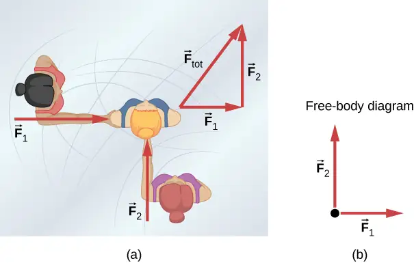
Figure 5.3(b) is our first example of a free-body diagram, which is a sketch showing all external forces acting on an object or system. The object or system is represented by a single isolated point (or free body), and only those forces acting on it that originate outside of the object or system—that is, external forces—are shown. (These forces are the only ones shown because only external forces acting on the free body affect its motion. We can ignore any internal forces within the body.) The forces are represented by vectors extending outward from the free body.
Free-body diagrams are useful in analyzing forces acting on an object or system, and are employed extensively in the study and application of Newton’s laws of motion. You will see them throughout this text and in all your studies of physics. The following steps briefly explain how a free-body diagram is created; we examine this strategy in more detail in Drawing Free-Body Diagrams.
Problem-Solving Strategy: Drawing Free-Body Diagrams
- Draw the object under consideration. If you are treating the object as a particle, represent the object as a point. Place this point at the origin of an xy-coordinate system.
- Include all forces that act on the object, representing these forces as vectors. However, do not include the net force on the object or the forces that the object exerts on its environment.
- Resolve all force vectors into x- and y-components.
- Draw a separate free-body diagram for each object in the problem.
We illustrate this strategy with two examples of free-body diagrams (Figure 5.4). The terms used in this figure are explained in more detail later in the chapter.
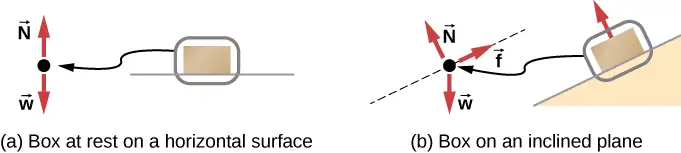
The steps given here are sufficient to guide you in this important problem-solving strategy. The final section of this chapter explains in more detail how to draw free-body diagrams when working with the ideas presented in this chapter.
Development of the Force Concept¶
A quantitative definition of force can be based on some standard force, just as distance is measured in units relative to a standard length. One possibility is to stretch a spring a certain fixed distance (Figure 5.5) and use the force it exerts to pull itself back to its relaxed shape—called a restoring force—as a standard. The magnitude of all other forces can be considered as multiples of this standard unit of force. Many other possibilities exist for standard forces. Some alternative definitions of force will be given later in this chapter.
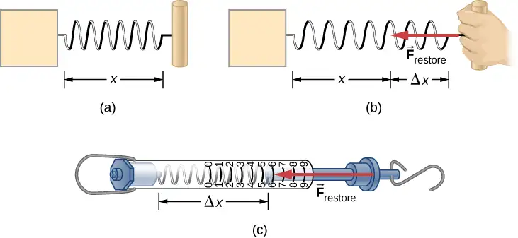
Let’s analyze force more deeply. Suppose a physics student sits at a table, working diligently on his homework (Figure 5.6). What external forces act on him? Can we determine the origin of these forces?
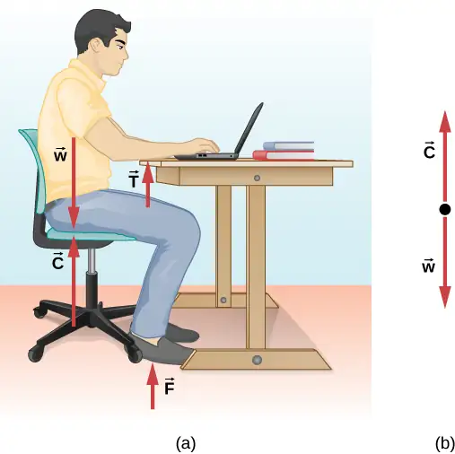
In most situations, forces are grouped into two categories: contact forces and field forces. As you might guess, contact forces are due to direct physical contact between objects. For example, the student in Figure 5.6 experiences the contact forces \(\mathbf{\vec{C}}\), \(\mathbf{\vec{F}}\), and \(\mathbf{\vec{T}}\), which are exerted by the chair on his posterior, the floor on his feet, and the table on his forearms, respectively. Field forces, however, act without the necessity of physical contact between objects. They depend on the presence of a “field” in the region of space surrounding the body under consideration. Since the student is in Earth’s gravitational field, he feels a gravitational force \(\mathbf{\vec{w}}\); in other words, he has weight.
You can think of a field as a property of space that is detectable by the forces it exerts. Scientists think there are only four fundamental force fields in nature. These are the gravitational, electromagnetic, strong nuclear, and weak fields (we consider these four forces in nature later in this text). As noted for \(\mathbf{\vec{w}}\) in Figure 5.6, the gravitational field is responsible for the weight of a body. The forces of the electromagnetic field include those of static electricity and magnetism; they are also responsible for the attraction among atoms in bulk matter. Both the strong nuclear and the weak force fields are effective only over distances roughly equal to a length of scale no larger than an atomic nucleus (\({10}^{-15}\:\text{m}\)). Their range is so small that neither field has influence in the macroscopic world of Newtonian mechanics.
Contact forces are fundamentally electromagnetic. While the elbow of the student in Figure 5.6 is in contact with the tabletop, the atomic charges in his skin interact electromagnetically with the charges in the surface of the table. The net (total) result is the force \(\mathbf{\vec{T}}\). Similarly, when adhesive tape sticks to a piece of paper, the atoms of the tape are intermingled with those of the paper to cause a net electromagnetic force between the two objects. However, in the context of Newtonian mechanics, the electromagnetic origin of contact forces is not an important concern.
Vector Notation for Force¶
As previously discussed, force is a vector; it has both magnitude and direction. The SI unit of force is called the newton (abbreviated N), and 1 N is the force needed to accelerate an object with a mass of 1 kg at a rate of \(1\:\text{m/s}^{2}\): \(1\:\text{N}=1\:\text{kg}\cdot\text{m/s}^{2}.\) An easy way to remember the size of a newton is to imagine holding a small apple; it has a weight of about 1 N.
We can thus describe a two-dimensional force in the form \(\mathbf{\vec{F}}=a\mathbf{\hat{i}}+b\mathbf{\hat{j}}\) (the unit vectors \(\mathbf{\hat{i}}\:\text{and}\:\mathbf{\hat{j}}\) indicate the direction of these forces along the x-axis and the y-axis, respectively) and a three-dimensional force in the form \(\mathbf{\vec{F}}=a\mathbf{\hat{i}}+b\mathbf{\hat{j}}+c\mathbf{\hat{k}}.\) In Figure 5.3, let’s suppose that ice skater 1, on the left side of the figure, pushes horizontally with a force of 30.0 N to the right; we represent this as \({\mathbf{\vec{F}}}_{1}=30.0\mathbf{\hat{i}}\:\text{N}.\) Similarly, if ice skater 2 pushes with a force of 40.0 N in the positive vertical direction shown, we would write \({\mathbf{\vec{F}}}_{2}=40.0\mathbf{\hat{j}}\:\text{N}.\) The resultant of the two forces causes a mass to accelerate—in this case, the third ice skater. This resultant is called the net external force \({\mathbf{\vec{F}}}_{\text{net}}\) and is found by taking the vector sum of all external forces acting on an object or system (thus, we can also represent net external force as \(\displaystyle \sum\mathbf{\vec{F}}\)):
equation callout
This equation can be extended to any number of forces.
In this example, we have \({\mathbf{\vec{F}}}_{\text{net}}=\displaystyle \sum\mathbf{\vec{F}}={\mathbf{\vec{F}}}_{1}+{\mathbf{\vec{F}}}_{2}=30.0\mathbf{\hat{i}}+40.0\mathbf{\hat{j}}\:\text{N}\). The hypotenuse of the triangle shown in Figure 5.3 is the resultant force, or net force. It is a vector. To find its magnitude (the size of the vector, without regard to direction), we use the rule given in Vectors, taking the square root of the sum of the squares of the components:
The direction is given by
measured from the positive x-axis, as shown in the free-body diagram in Figure 5.3(b).
Let’s suppose the ice skaters now push the third ice skater with \({\mathbf{\vec{F}}}_{1}=3.0\mathbf{\hat{i}}+8.0\mathbf{\hat{j}}\:\text{N}\) and \({\mathbf{\vec{F}}}_{2}=5.0\mathbf{\hat{i}}+4.0\mathbf{\hat{j}}\:\text{N}\). What is the resultant of these two forces? We must recognize that force is a vector; therefore, we must add using the rules for vector addition:
Check Your Understanding
Find the magnitude and direction of the net force in the ice skater example just given.
Answer
14 N, \(56{}^{\circ}\) measured from the positive x-axis
Media
Engage the Phet simulation below to learn how to add vectors. Drag vectors onto a graph, change their length and angle, and sum them together. The magnitude, angle, and components of each vector can be displayed in several formats.
5.2 Newton's First Law¶
Learning Objectives
By the end of this section, you will be able to:
- Describe Newton's first law of motion
- Recognize friction as an external force
- Define inertia
- Identify inertial reference frames
- Calculate equilibrium for a system
Experience suggests that an object at rest remains at rest if left alone and that an object in motion tends to slow down and stop unless some effort is made to keep it moving. However, Newton’s first law gives a deeper explanation of this observation.
Newton’s First Law of Motion
A body at rest remains at rest or, if in motion, remains in motion at constant velocity unless acted on by a net external force.
Note the repeated use of the verb “remains.” We can think of this law as preserving the status quo of motion. Also note the expression “constant velocity;” this means that the object maintains a path along a straight line, since neither the magnitude nor the direction of the velocity vector changes. We can use Figure 5.7 to consider the two parts of Newton’s first law.
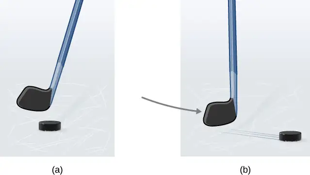
Rather than contradicting our experience, Newton’s first law says that there must be a cause for any change in velocity (a change in either magnitude or direction) to occur. This cause is a net external force, which we defined earlier in the chapter. An object sliding across a table or floor slows down due to the net force of friction acting on the object. If friction disappears, will the object still slow down?
The idea of cause and effect is crucial in accurately describing what happens in various situations. For example, consider what happens to an object sliding along a rough horizontal surface. The object quickly grinds to a halt. If we spray the surface with talcum powder to make the surface smoother, the object slides farther. If we make the surface even smoother by rubbing lubricating oil on it, the object slides farther yet. Extrapolating to a frictionless surface and ignoring air resistance, we can imagine the object sliding in a straight line indefinitely. Friction is thus the cause of slowing (consistent with Newton’s first law). The object would not slow down if friction were eliminated.
Consider an air hockey table (Figure 5.8). When the air is turned off, the puck slides only a short distance before friction slows it to a stop. However, when the air is turned on, it creates a nearly frictionless surface, and the puck glides long distances without slowing down. Additionally, if we know enough about the friction, we can accurately predict how quickly the object slows down.
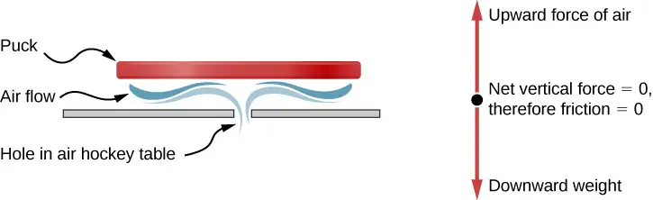
Newton’s first law is general and can be applied to anything from an object sliding on a table to a satellite in orbit to blood pumped from the heart. Experiments have verified that any change in velocity (speed or direction) must be caused by an external force. The idea of generally applicable or universal laws is important—it is a basic feature of all laws of physics. Identifying these laws is like recognizing patterns in nature from which further patterns can be discovered. The genius of Galileo, who first developed the idea for the first law of motion, and Newton, who clarified it, was to ask the fundamental question: “What is the cause?” Thinking in terms of cause and effect is fundamentally different from the typical ancient Greek approach, when questions such as “Why does a tiger have stripes?” would have been answered in Aristotelian fashion, such as “That is the nature of the beast.” The ability to think in terms of cause and effect is the ability to make a connection between an observed behavior and the surrounding world.
Gravitation and Inertia¶
Regardless of the scale of an object, whether a molecule or a subatomic particle, two properties remain valid and thus of interest to physics: gravitation and inertia. Both are connected to mass. Roughly speaking, mass is a measure of the amount of matter in something. Gravitation is the attraction of one mass to another, such as the attraction between yourself and Earth that holds your feet to the floor. The magnitude of this attraction is your weight, and it is a force.
Mass is also related to inertia, the ability of an object to resist changes in its motion—in other words, to resist acceleration. Newton’s first law is often called the law of inertia. As we know from experience, some objects have more inertia than others. It is more difficult to change the motion of a large boulder than that of a basketball, for example, because the boulder has more mass than the basketball. In other words, the inertia of an object is measured by its mass. The relationship between mass and weight is explored later in this chapter.
Inertial Reference Frames¶
Earlier, we stated Newton’s first law as “A body at rest remains at rest or, if in motion, remains in motion at constant velocity unless acted on by a net external force.” It can also be stated as “Every body remains in its state of uniform motion in a straight line unless it is compelled to change that state by forces acting on it.” To Newton, “uniform motion in a straight line” meant constant velocity, which includes the case of zero velocity, or rest. Therefore, the first law says that the velocity of an object remains constant if the net force on it is zero.
Newton’s first law is usually considered to be a statement about reference frames. It provides a method for identifying a special type of reference frame: the inertial reference frame. In principle, we can make the net force on a body zero. If its velocity relative to a given frame is constant, then that frame is said to be inertial. So by definition, an inertial reference frame is a reference frame in which Newton’s first law is valid. Newton’s first law applies to objects with constant velocity. From this fact, we can infer the following statement.
Inertial Reference Frame
A reference frame moving at constant velocity relative to an inertial frame is also inertial. A reference frame accelerating relative to an inertial frame is not inertial.
Are inertial frames common in nature? It turns out that well within experimental error, a reference frame at rest relative to the most distant, or “fixed,” stars is inertial. All frames moving uniformly with respect to this fixed-star frame are also inertial. For example, a nonrotating reference frame attached to the Sun is, for all practical purposes, inertial, because its velocity relative to the fixed stars does not vary by more than one part in \({10}^{10}.\) Earth accelerates relative to the fixed stars because it rotates on its axis and revolves around the Sun; hence, a reference frame attached to its surface is not inertial. For most problems, however, such a frame serves as a sufficiently accurate approximation to an inertial frame, because the acceleration of a point on Earth’s surface relative to the fixed stars is rather small (\(\lt 3.4\:\times\:{10}^{-2}\:\text{m/s}^{2}\)). Thus, unless indicated otherwise, we consider reference frames fixed on Earth to be inertial.
Finally, no particular inertial frame is more special than any other. As far as the laws of nature are concerned, all inertial frames are equivalent. In analyzing a problem, we choose one inertial frame over another simply on the basis of convenience.
Newton’s First Law and Equilibrium¶
Newton’s first law tells us about the equilibrium of a system, which is the state in which the forces on the system are balanced. Returning to Forces and the ice skaters in Figure 5.3, we know that the forces \({\mathbf{\vec{F}}}_{1}\) and \({\mathbf{\vec{F}}}_{2}\) combine to form a resultant force, or the net external force: \({\mathbf{\vec{F}}}_{\text{R}}={\mathbf{\vec{F}}}_{\text{net}}={\mathbf{\vec{F}}}_{1}+{\mathbf{\vec{F}}}_{2}.\) To create equilibrium, we require a balancing force that will produce a net force of zero. This force must be equal in magnitude but opposite in direction to \({\mathbf{\vec{F}}}_{\text{R}},\) which means the vector must be \(-{\mathbf{\vec{F}}}_{\text{R}}.\) Referring to the ice skaters, for which we found \({\mathbf{\vec{F}}}_{\text{R}}\) to be \(30.0\mathbf{\hat{i}}+40.0\mathbf{\hat{j}}\:\text{N}\), we can determine the balancing force by simply finding \(-{\mathbf{\vec{F}}}_{\text{R}}=-30.0\mathbf{\hat{i}}-40.0\mathbf{\hat{j}}\:\text{N}.\) See the free-body diagram in Figure 5.3(b).
We can give Newton’s first law in vector form:
equation callout
This equation says that a net force of zero implies that the velocity \(\mathbf{\vec{v}}\) of the object is constant. (The word “constant” can indicate zero velocity.)
Newton’s first law is deceptively simple. If a car is at rest, the only forces acting on the car are weight and the contact force of the pavement pushing up on the car (Figure 5.9). It is easy to understand that a nonzero net force is required to change the state of motion of the car. As a car moves with constant velocity, the friction force propels the car forward and opposes the drag force against it.
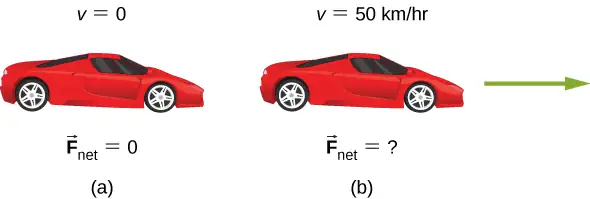
Example 5.1 When Does Newton’s First Law Apply to Your Car?
Newton’s laws can be applied to all physical processes involving force and motion, including something as mundane as driving a car.
(a) Your car is parked outside your house. Does Newton’s first law apply in this situation? Why or why not?
(b) Your car moves at constant velocity down the street. Does Newton’s first law apply in this situation? Why or why not?
Strategy
In (a), we are considering the first part of Newton’s first law, dealing with a body at rest; in (b), we look at the second part of Newton’s first law for a body in motion.
Solution
- When your car is parked, all forces on the car must be balanced; the vector sum is 0 N. Thus, the net force is zero, and Newton’s first law applies. The acceleration of the car is zero, and in this case, the velocity is also zero.
- When your car is moving at constant velocity down the street, the net force must also be zero according to Newton’s first law. The car’s frictional force between the road and tires opposes the drag force on the car with the same magnitude, producing a net force of zero. The body continues in its state of constant velocity until the net force becomes nonzero. Realize that a net force of zero means that an object is either at rest or moving with constant velocity, that is, it is not accelerating. What do you suppose happens when the car accelerates? We explore this idea in the next section.
Significance
As this example shows, there are two kinds of equilibrium. In (a), the car is at rest; we say it is in static equilibrium. In (b), the forces on the car are balanced, but the car is moving; we say that it is in dynamic equilibrium. (We examine this idea in more detail in Static Equilibrium and Elasticity.) Again, it is possible for two (or more) forces to act on an object yet for the object to move. In addition, a net force of zero cannot produce acceleration.
Check Your Understanding
A skydiver opens their parachute, and shortly thereafter, they are moving at constant velocity. (a) What forces are acting on them? (b) Which force is bigger?
Answer
a. Their weight acts downward, and the force of air resistance with the parachute acts upward. b. neither; the forces are equal in magnitude
Media
Engage the simulation below to predict, qualitatively, how an external force will affect the speed and direction of an object’s motion. Explain the effects with the help of a free-body diagram. Use free-body diagrams to draw position, velocity, acceleration, and force graphs, and vice versa. Explain how the graphs relate to one another. Given a scenario or a graph, sketch all four graphs.
5.3 Newton's Second Law¶
Learning Objectives
By the end of this section, you will be able to:
- Distinguish between external and internal forces
- Describe Newton's second law of motion
- Explain the dependence of acceleration on net force and mass
Newton’s second law is closely related to his first law. It mathematically gives the cause-and-effect relationship between force and changes in motion. Newton’s second law is quantitative and is used extensively to calculate what happens in situations involving a force. Before we can write down Newton’s second law as a simple equation that gives the exact relationship of force, mass, and acceleration, we need to sharpen some ideas we mentioned earlier.
Force and Acceleration¶
First, what do we mean by a change in motion? The answer is that a change in motion is equivalent to a change in velocity. A change in velocity means, by definition, that there is acceleration. Newton’s first law says that a net external force causes a change in motion; thus, we see that a net external force causes nonzero acceleration.
We defined external force in Forces as force acting on an object or system that originates outside of the object or system. Let’s consider this concept further. An intuitive notion of external is correct—it is outside the system of interest. For example, in Figure 5.10(a), the system of interest is the car plus the person within it. The two forces exerted by the two students are external forces. In contrast, an internal force acts between elements of the system. Thus, the force the person in the car exerts to hang on to the steering wheel is an internal force between elements of the system of interest. Only external forces affect the motion of a system, according to Newton’s first law. (The internal forces cancel each other out, as explained in the next section.) Therefore, we must define the boundaries of the system before we can determine which forces are external. Sometimes, the system is obvious, whereas at other times, identifying the boundaries of a system is more subtle. The concept of a system is fundamental to many areas of physics, as is the correct application of Newton’s laws. This concept is revisited many times in the study of physics.
![Figure a shows two people pushing a car with forces F1 and F2 in the right direction. Acceleration a is also in the same direction. Frictional force f is shown near the tire in the opposite direction, left. Upward force N and downward force W are equal in magnitude and are shown near the ground. Figure b puts all the forces of figure a together and shows a net force F net. These forces are also shown in a free body diagram. Figure c shows the car being towed by a tow-truck. Here, the forces N, W and f are the same as those in figure a. F subscript tow truck has a greater magnitude than F1 or F2. Acceleration a prime has a greater magnitude than a. All forces of this system are also shown in a free body diagram.](img/cnx-uphysics-05-03-extforce.webp)
From this example, you can see that different forces exerted on the same mass produce different accelerations. In Figure 5.10(a), the two students push a car with a driver in it. Arrows representing all external forces are shown. The system of interest is the car and its driver. The weight \(\mathbf{\vec{w}}\) of the system and the support of the ground \(\mathbf{\vec{N}}\) are also shown for completeness and are assumed to cancel (because there was no vertical motion and no imbalance of forces in the vertical direction to create a change in motion). The vector \(\mathbf{\vec{f}}\) represents the friction acting on the car, and it acts to the left, opposing the motion of the car. (We discuss friction in more detail in the next chapter.) In Figure 5.10(b), all external forces acting on the system add together to produce the net force \({\mathbf{\vec{F}}}_{\text{net}}.\) The free-body diagram shows all of the forces acting on the system of interest. The dot represents the center of mass of the system. Each force vector extends from this dot. Because there are two forces acting to the right, the vectors are shown collinearly. Finally, in Figure 5.10(c), a larger net external force produces a larger acceleration \((\mathbf{\overrightarrow{a'}} \gt \mathbf{\vec{a}})\) when the tow truck pulls the car.
It seems reasonable that acceleration would be directly proportional to and in the same direction as the net external force acting on a system. This assumption has been verified experimentally and is illustrated in Figure 5.10. To obtain an equation for Newton’s second law, we first write the relationship of acceleration \(\mathbf{\vec{a}}\) and net external force \({\mathbf{\vec{F}}}_{\text{net}}\) as the proportionality
where the symbol \(\propto\) means “proportional to.” (Recall from Forces that the net external force is the vector sum of all external forces and is sometimes indicated as \(\displaystyle \sum\mathbf{\vec{F}}.\)) This proportionality shows what we have said in words—acceleration is directly proportional to net external force. Once the system of interest is chosen, identify the external forces and ignore the internal ones. It is a tremendous simplification to disregard the numerous internal forces acting between objects within the system, such as muscular forces within the students’ bodies, let alone the myriad forces between the atoms in the objects. Still, this simplification helps us solve some complex problems.
It also seems reasonable that acceleration should be inversely proportional to the mass of the system. In other words, the larger the mass (the inertia), the smaller the acceleration produced by a given force. As illustrated in Figure 5.11, the same net external force applied to a basketball produces a much smaller acceleration when it is applied to an SUV. The proportionality is written as
where m is the mass of the system and a is the magnitude of the acceleration. Experiments have shown that acceleration is exactly inversely proportional to mass, just as it is directly proportional to net external force.

It has been found that the acceleration of an object depends only on the net external force and the mass of the object. Combining the two proportionalities just given yields Newton’s second law.
Newton’s Second Law of Motion
The acceleration of a system is directly proportional to and in the same direction as the net external force acting on the system and is inversely proportional to its mass. In equation form, Newton’s second law is
where \(\mathbf{\vec{a}}\) is the acceleration, \({\mathbf{\vec{F}}}_{\text{net}}\) is the net force, and m is the mass. This is often written in the more familiar form
but the first equation gives more insight into what Newton’s second law means. When only the magnitude of force and acceleration are considered, this equation can be written in the simpler scalar form:
The law is a cause-and-effect relationship among three quantities that is not simply based on their definitions. The validity of the second law is based on experimental verification. The free-body diagram, which you will learn to draw in Drawing Free-Body Diagrams, is the basis for writing Newton’s second law.
Example 5.2 What Acceleration Can a Person Produce When Pushing a Lawn Mower?
Suppose that the net external force (push minus friction) exerted on a lawn mower is 51 N (about 11 lb.) parallel to the ground (Figure 5.12). The mass of the mower is 24 kg. What is its acceleration?
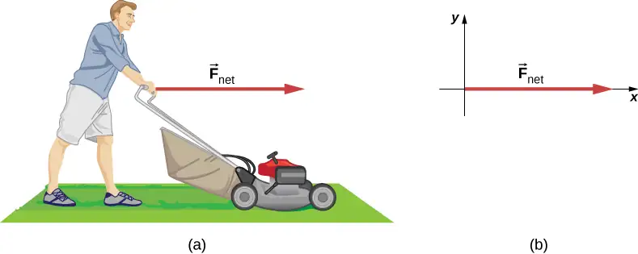
Strategy
This problem involves only motion in the horizontal direction; we are also given the net force, indicated by the single vector, but we can suppress the vector nature and concentrate on applying Newton’s second law. Since \(F_{\text{net}}\) and m are given, the acceleration can be calculated directly from Newton’s second law as \(F_{\text{net}}=ma.\)
Solution
The magnitude of the acceleration a is \(a=F_{\text{net}}\text{/}m\). Entering known values gives
Substituting the unit of kilograms times meters per square second for newtons yields
Significance
The direction of the acceleration is the same direction as that of the net force, which is parallel to the ground. This is a result of the vector relationship expressed in Newton’s second law, that is, the vector representing net force is the scalar multiple of the acceleration vector. There is no information given in this example about the individual external forces acting on the system, but we can say something about their relative magnitudes. For example, the force exerted by the person pushing the mower must be greater than the friction opposing the motion (since we know the mower moved forward), and the vertical forces must cancel because no acceleration occurs in the vertical direction (the mower is moving only horizontally). The acceleration found is small enough to be reasonable for a person pushing a mower. Such an effort would not last too long, because the person’s top speed would soon be reached.
Check Your Understanding
At the time of its launch, the HMS Titanic was the most massive mobile object ever built, with a mass of \(6.0\:\times\:{10}^{7}\:\text{kg}\). If a force of 6 MN \((6\:\times\:{10}^{6}\:\text{N})\) was applied to the ship, what acceleration would it experience?
Answer
\(0.1\:\text{m/s}^{2}\)
In the preceding example, we dealt with net force only for simplicity. However, several forces act on the lawn mower. The weight \(\mathbf{\vec{w}}\) (discussed in detail in Mass and Weight) pulls down on the mower, toward the center of Earth; this produces a contact force on the ground. The ground must exert an upward force on the lawn mower, known as the normal force \(\mathbf{\vec{N}}\), which we define in Common Forces. These forces are balanced and therefore do not produce vertical acceleration. In the next example, we show both of these forces. As you continue to solve problems using Newton’s second law, be sure to show multiple forces.
Example 5.3 Which Force Is Bigger?
(a) The car shown in Figure 5.13 is moving at a constant speed. Which force is bigger, \({\mathbf{\vec{F}}}_{\text{friction}}\) or \({\mathbf{\vec{F}}}_{\text{drag}}\)? Explain.
(b) The same car is now accelerating to the right. Which force is bigger, \({\mathbf{\vec{F}}}_{\text{friction}}\) or \({\mathbf{\vec{F}}}_{\text{drag}}?\) Explain.
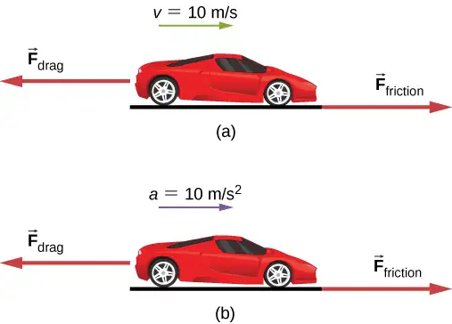
Strategy
We must consider Newton’s first and second laws to analyze the situation. We need to decide which law applies; this, in turn, will tell us about the relationship between the forces.
Solution
- The forces are equal. According to Newton’s first law, if the net force is zero, the velocity is constant.
- In this case, \({\mathbf{\vec{F}}}_{\text{friction}}\) must be larger than \({\mathbf{\vec{F}}}_{\text{drag}}.\) According to Newton’s second law, a net force is required to cause acceleration.
Significance
These questions may seem trivial, but they are commonly answered incorrectly. For a car or any other object to move, it must be accelerated from rest to the desired speed; this requires that the friction force be greater than the drag force. Once the car is moving at constant velocity, the net force must be zero; otherwise, the car will accelerate (gain speed). To solve problems involving Newton’s laws, we must understand whether to apply Newton’s first law (where \(\displaystyle \sum\mathbf{\vec{F}}=\mathbf{\overrightarrow{0}}\)) or Newton’s second law (where \(\displaystyle \sum\mathbf{\vec{F}}\) is not zero). This will be apparent as you see more examples and attempt to solve problems on your own.
Example 5.4 What Rocket Thrust Accelerates This Sled?
Before space flights carrying astronauts, rocket sleds were used to test aircraft, missile equipment, and physiological effects on human subjects at high speeds. They consisted of a platform that was mounted on one or two rails and propelled by several rockets.
Calculate the magnitude of force exerted by each rocket, called its thrust T, for the four-rocket propulsion system shown in Figure 5.14. The sled’s initial acceleration is \(49\:\text{m/s}^{2}\), the mass of the system is 2100 kg, and the force of friction opposing the motion is 650 N.
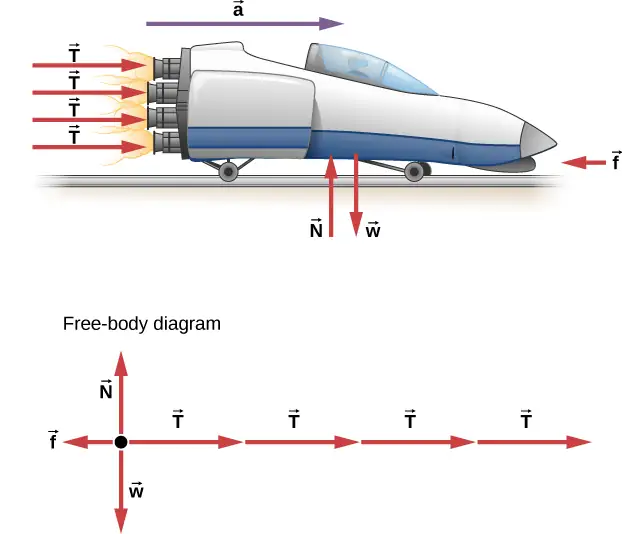
Strategy
Although forces are acting both vertically and horizontally, we assume the vertical forces cancel because there is no vertical acceleration. This leaves us with only horizontal forces and a simpler one-dimensional problem. Directions are indicated with plus or minus signs, with right taken as the positive direction. See the free-body diagram in Figure 5.14.
Solution
Since acceleration, mass, and the force of friction are given, we start with Newton’s second law and look for ways to find the thrust of the engines. We have defined the direction of the force and acceleration as acting “to the right,” so we need to consider only the magnitudes of these quantities in the calculations. Hence we begin with
where \(F_{\text{net}}\) is the net force along the horizontal direction. We can see from the figure that the engine thrusts add, whereas friction opposes the thrust. In equation form, the net external force is
Substituting this into Newton’s second law gives us
Using a little algebra, we solve for the total thrust 4T:
Substituting known values yields
Therefore, the total thrust is
and the individual thrusts are
Significance
The numbers are quite large, so the result might surprise you. Experiments such as this were performed in the early 1960s to test the limits of human endurance, and the setup was designed to protect human subjects in jet fighter emergency ejections. Speeds of 1000 km/h were obtained, with accelerations of 45 g’s. (Recall that g, acceleration due to gravity, is \(9.80\:\text{m/s}^{2}\). When we say that acceleration is 45 g’s, it is \(45\:\times\:9.8\:\text{m/s}^{2},\) which is approximately \(440\:\text{m/s}^{2}\).) Although living subjects are not used anymore, land speeds of 10,000 km/h have been obtained with a rocket sled.
In this example, as in the preceding one, the system of interest is obvious. We see in later examples that choosing the system of interest is crucial—and the choice is not always obvious.
Newton’s second law is more than a definition; it is a relationship among acceleration, force, and mass. It can help us make predictions. Each of those physical quantities can be defined independently, so the second law tells us something basic and universal about nature.
Check Your Understanding
A 550-kg sports car collides with a 2200-kg truck, and during the collision, the net force on each vehicle is the force exerted by the other. If the magnitude of the truck’s acceleration is \(10\:\text{m/s}^{2},\) what is the magnitude of the sports car’s acceleration?
Answer
\(40\:\text{m/s}^{2}\)
Component Form of Newton’s Second Law¶
We have developed Newton’s second law and presented it as a vector equation in Equation 5.3. This vector equation can be written as three component equations:
equation callout
The second law is a description of how a body responds mechanically to its environment. The influence of the environment is the net force \({\mathbf{\vec{F}}}_{\text{net}},\) the body’s response is the acceleration \(\mathbf{\vec{a}},\) and the strength of the response is inversely proportional to the mass m. The larger the mass of an object, the smaller its response (its acceleration) to the influence of the environment (a given net force). Therefore, a body’s mass is a measure of its inertia, as we explained in Newton’s First Law.
Example 5.5 Force on a Soccer Ball
A 0.400-kg soccer ball is kicked across the field by a player; it undergoes acceleration given by \(\mathbf{\vec{a}}=3.00\mathbf{\hat{i}}+7.00\mathbf{\hat{j}}\:\text{m/s}^{2}.\) Find (a) the resultant force acting on the ball and (b) the magnitude and direction of the resultant force.
Strategy
The vectors in \(\mathbf{\hat{i}}\) and \(\mathbf{\hat{j}}\) format, which indicate force direction along the x-axis and the y-axis, respectively, are involved, so we apply Newton’s second law in vector form.
Solution
a. We apply Newton’s second law:
b. Magnitude and direction are found using the components of \({\mathbf{\vec{F}}}_{\text{net}}\):
Significance
We must remember that Newton’s second law is a vector equation. In (a), we are multiplying a vector by a scalar to determine the net force in vector form. While the vector form gives a compact representation of the force vector, it does not tell us how “big” it is, or where it goes, in intuitive terms. In (b), we are determining the actual size (magnitude) of this force and the direction in which it travels.
Example 5.6 Mass of a Car
Find the mass of a car if a net force of \(-600.0\mathbf{\hat{j}}\:\text{N}\) produces an acceleration of \(-0.2\mathbf{\hat{j}}\:\text{m/s}^{2}\).
Strategy
Vector division is not defined, so \(m={\mathbf{\vec{F}}}_{\text{net}}\text{/}\mathbf{\vec{a}}\) cannot be performed. However, mass m is a scalar, so we can use the scalar form of Newton’s second law, \(m=F_{\text{net}}\text{/}a\).
Solution
We use \(m=F_{\text{net}}\text{/}a\) and substitute the magnitudes of the two vectors: \(F_{\text{net}}=600.0\:\text{N}\) and \(a=0.2\:\text{m/s}^{2}.\) Therefore,
Significance
Force and acceleration were given in the \(\mathbf{\hat{i}}\) and \(\mathbf{\hat{j}}\) format, but the answer, mass m, is a scalar and thus is not given in \(\mathbf{\hat{i}}\) and \(\mathbf{\hat{j}}\) form.
Example 5.7 Several Forces on a Particle
A particle of mass \(m=4.0\:\text{kg}\) is acted upon by four forces of magnitudes. \(F_{1}=10.0\:\text{N},\:F_{2}=40.0\:\text{N},\:F_{3}=5.0\:\text{N},\:\text{and}\:F_{4}=2.0\:\text{N}\), with the directions as shown in the free-body diagram in Figure 5.15. What is the acceleration of the particle?
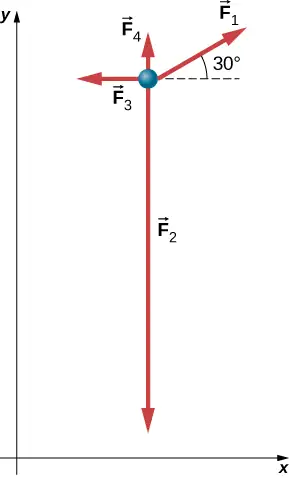
Strategy
Because this is a two-dimensional problem, we must use a free-body diagram. First, \({\mathbf{\vec{F}}}_{1}\) must be resolved into x- and y-components. We can then apply the second law in each direction.
Solution
We draw a free-body diagram as shown in Figure 5.15. Now we apply Newton’s second law. We consider all vectors resolved into x- and y-components:
Thus, the net acceleration is
which is a vector of magnitude \(8.4\:\text{m/s}^{2}\) directed at \(276{}^{\circ}\) to the positive x-axis.
Significance
Numerous examples in everyday life can be found that involve three or more forces acting on a single object, such as cables running from the Golden Gate Bridge or a football player being tackled by three defenders. We can see that the solution of this example is just an extension of what we have already done.
Check Your Understanding
A car has forces acting on it, as shown below. The mass of the car is 1000.0 kg. The road is slick, so friction can be ignored. (a) What is the net force on the car? (b) What is the acceleration of the car?
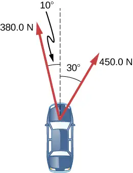
Answer
a. \(F_{\text{net}}=159.0\mathbf{\hat{i}}+763.9\mathbf{\hat{j}}\:\text{N}\); b. \(a=0.1590\mathbf{\hat{i}}+70.639\mathbf{\hat{j}}\:\text{N}\)
Newton’s Second Law and Momentum¶
Newton actually stated his second law in terms of momentum: “The instantaneous rate at which a body’s momentum changes is equal to the net force acting on the body.” (“Instantaneous rate” implies that the derivative is involved.) This can be given by the vector equation
equation callout
This means that Newton’s second law addresses the central question of motion: What causes a change in motion of an object? Momentum was described by Newton as “quantity of motion,” a way of combining both the velocity of an object and its mass. We devote Linear Momentum and Collisions to the study of momentum.
For now, it is sufficient to define momentum \(\mathbf{\vec{p}}\) as the product of the mass of the object m and its velocity \(\mathbf{\vec{v}}\):
Since velocity is a vector, so is momentum.
It is easy to visualize momentum. A train moving at 10 m/s has more momentum than one that moves at 2 m/s. In everyday life, we speak of one sports team as “having momentum” when they score points against the opposing team.
If we substitute Equation 5.7 into Equation 5.6, we obtain
When m is constant, we have
Thus, we see that the momentum form of Newton’s second law reduces to the form given earlier in this section.
Media
Explore the forces at work when pulling a cart or pushing a refrigerator, crate, or person. Put an object on a ramp and see how it affects its motion. Engage the simulation below and see how applied forces make objects move.
5.4 Mass and Weight¶
Learning Objectives
By the end of this section, you will be able to:
- Explain the difference between mass and weight
- Explain why objects falling through the air are never truly in free fall
- Describe the concept of weightlessness
Mass and weight are often used interchangeably in everyday conversation. For example, our medical records often show our weight in kilograms but never in the correct units of newtons. In physics, however, there is an important distinction. Weight is the pull of Earth on an object. It depends on the distance from the center of Earth. Unlike weight, mass does not vary with location. The mass of an object is the same on Earth, in orbit, or on the surface of the Moon.
Units of Force¶
The equation \(F_{\text{net}}=ma\) is used to define net force in terms of mass, length, and time. As explained earlier, the SI unit of force is the newton. Since \(F_{\text{net}}=ma,\)
Although almost the entire world uses the newton for the unit of force, in the United States, the most familiar unit of force is the pound (lb), where 1 N = 0.225 lb. Thus, a 225-lb person weighs 1000 N.
Weight and Gravitational Force¶
When an object is dropped, it accelerates toward the center of Earth. Newton’s second law says that a net force on an object is responsible for its acceleration. If air resistance is negligible, the net force on a falling object is the gravitational force, commonly called its weight \(\mathbf{\vec{w}}\), or its force due to gravity acting on an object of mass m. Weight can be denoted as a vector because it has a direction; down is, by definition, the direction of gravity, and hence, weight is a downward force. The magnitude of weight is denoted as w. Galileo was instrumental in showing that, in the absence of air resistance, all objects fall with the same acceleration g. Using Galileo’s result and Newton’s second law, we can derive an equation for weight.
Consider an object with mass m falling toward Earth. It experiences only the downward force of gravity, which is the weight \(\mathbf{\vec{w}}\). Newton’s second law says that the magnitude of the net external force on an object is \({\mathbf{\vec{F}}}_{\text{net}}=m\mathbf{\vec{a}}.\) We know that the acceleration of an object due to gravity is \(\mathbf{\vec{g}},\) or \(\mathbf{\vec{a}}=\mathbf{\vec{g}}\). Substituting these into Newton’s second law gives us the following equations.
Weight
The gravitational force on a mass is its weight. We can write this in vector form, where \(\mathbf{\vec{w}}\) is weight and m is mass, as
In scalar form, we can write
Since \(g=9.80\:\text{m/s}^{2}\) on Earth, the weight of a 1.00-kg object on Earth is 9.80 N:
When the net external force on an object is its weight, we say that it is in free fall, that is, the only force acting on the object is gravity. However, when objects on Earth fall downward through the air, they are never truly in free fall because there is always some upward resistance force from the air acting on the object.
Acceleration due to gravity g varies slightly over the surface of Earth, so the weight of an object depends on its location and is not an intrinsic property of the object. Weight varies dramatically if we leave Earth’s surface. On the Moon, for example, acceleration due to gravity is only \({1.62\:\text{m/s}}^{2}\). A 1.0-kg mass thus has a weight of 9.8 N on Earth and only about 1.6 N on the Moon.
The broadest definition of weight in this sense is that the weight of an object is the gravitational force on it from the nearest large body, such as Earth, the Moon, or the Sun. This is the most common and useful definition of weight in physics. It differs dramatically, however, from the definition of weight used by NASA and the popular media in relation to space travel and exploration. When they speak of “weightlessness” and “microgravity,” they are referring to the phenomenon we call “free fall” in physics. We use the preceding definition of weight, force \(\mathbf{\vec{w}}\) due to gravity acting on an object of mass m, and we make careful distinctions between free fall and actual weightlessness.
Be aware that weight and mass are different physical quantities, although they are closely related. Mass is an intrinsic property of an object: It is a quantity of matter. The quantity or amount of matter of an object is determined by the numbers of atoms and molecules of various types it contains. Because these numbers do not vary, in Newtonian physics, mass does not vary; therefore, its response to an applied force does not vary. In contrast, weight is the gravitational force acting on an object, so it does vary depending on gravity. For example, a person closer to the center of Earth, at a low elevation such as New Orleans, weighs slightly more than a person who is located in the higher elevation of Denver, even though they may have the same mass.
It is tempting to equate mass to weight, because most of our examples take place on Earth, where the weight of an object varies only a little with the location of the object. In addition, it is difficult to count and identify all of the atoms and molecules in an object, so mass is rarely determined in this manner. If we consider situations in which \(\mathbf{\vec{g}}\) is a constant on Earth, we see that weight \(\mathbf{\vec{w}}\) is directly proportional to mass m, since \(\mathbf{\vec{w}}=m\mathbf{\vec{g}},\) that is, the more massive an object is, the more it weighs. Operationally, the masses of objects are determined by comparison with the standard kilogram, as we discussed in Units and Measurement. But by comparing an object on Earth with one on the Moon, we can easily see a variation in weight but not in mass. For instance, on Earth, a 5.0-kg object weighs 49 N; on the Moon, where g is \({1.67\:\text{m/s}}^{2}\), the object weighs 8.4 N. However, the mass of the object is still 5.0 kg on the Moon.
Example 5.8 Clearing a Field
A farmer is lifting some moderately heavy rocks from a field to plant crops. He lifts a stone that weighs 40.0 lb. (about 180 N). What force does he apply if the stone accelerates at a rate of \(1.5\:\text{m/s}^{2}?\)
Strategy
We were given the weight of the stone, which we use in finding the net force on the stone. However, we also need to know its mass to apply Newton’s second law, so we must apply the equation for weight, \(w=mg\), to determine the mass.
Solution
No forces act in the horizontal direction, so we can concentrate on vertical forces, as shown in the following free-body diagram. We label the acceleration to the side; technically, it is not part of the free-body diagram, but it helps to remind us that the object accelerates upward (so the net force is upward).
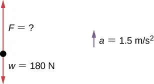
Significance
To apply Newton’s second law as the primary equation in solving a problem, we sometimes have to rely on other equations, such as the one for weight or one of the kinematic equations, to complete the solution.
Check Your Understanding
For Example 5.8, find the acceleration when the farmer’s applied force is 230.0 N.
Answer
\(a=2.78\:\text{m/s}^{2}\)
5.5 Newton’s Third Law¶
Learning Objectives
By the end of this section, you will be able to:
- State Newton’s third law of motion
- Identify the action and reaction forces in different situations
- Apply Newton’s third law to define systems and solve problems of motion
We have thus far considered force as a push or a pull; however, if you think about it, you realize that no push or pull ever occurs by itself. When you push on a wall, the wall pushes back on you. This brings us to Newton’s third law.
Newton’s Third Law of Motion
Whenever one body exerts a force on a second body, the first body experiences a force that is equal in magnitude and opposite in direction to the force that it exerts. Mathematically, if a body A exerts a force \(\mathbf{\vec{F}}\) on body B, then B simultaneously exerts a force \(-\mathbf{\vec{F}}\) on A, or in vector equation form,
Newton’s third law represents a certain symmetry in nature: Forces always occur in pairs, and one body cannot exert a force on another without experiencing a force itself. We sometimes refer to this law loosely as “action-reaction,” where the force exerted is the action and the force experienced as a consequence is the reaction. Newton’s third law has practical uses in analyzing the origin of forces and understanding which forces are external to a system.
We can readily see Newton’s third law at work by taking a look at how people move about. Consider a swimmer pushing off the side of a pool (Figure 5.16). She pushes against the wall of the pool with her feet and accelerates in the direction opposite that of her push. The wall has exerted an equal and opposite force on the swimmer. You might think that two equal and opposite forces would cancel, but they do not because they act on different systems. In this case, there are two systems that we could investigate: the swimmer and the wall. If we select the swimmer to be the system of interest, as in the figure, then \(F_{\text{wall on feet}}\) is an external force on this system and affects its motion. The swimmer moves in the direction of this force. In contrast, the force \(F_{\text{feet on wall}}\) acts on the wall, not on our system of interest. Thus, \(F_{\text{feet on wall}}\) does not directly affect the motion of the system and does not cancel \(F_{\text{wall on feet}}.\) The swimmer pushes in the direction opposite that in which she wishes to move. The reaction to her push is thus in the desired direction. In a free-body diagram, such as the one shown in Figure 5.16, we never include both forces of an action-reaction pair; in this case, we only use \(F_{\text{wall on feet}}\), not \(F_{\text{feet on wall}}\).
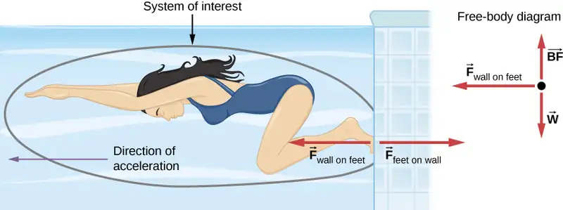
Other examples of Newton’s third law are easy to find:
- As a professor paces in front of a whiteboard, he exerts a force backward on the floor. The floor exerts a reaction force forward on the professor that causes him to accelerate forward.
- A car accelerates forward because the ground pushes forward on the drive wheels, in reaction to the drive wheels pushing backward on the ground. You can see evidence of the wheels pushing backward when tires spin on a gravel road and throw the rocks backward.
- Rockets move forward by expelling gas backward at high velocity. This means the rocket exerts a large backward force on the gas in the rocket combustion chamber; therefore, the gas exerts a large reaction force forward on the rocket. This reaction force, which pushes a body forward in response to a backward force, is called thrust. It is a common misconception that rockets propel themselves by pushing on the ground or on the air behind them. They actually work better in a vacuum, where they can more readily expel the exhaust gases.
- Helicopters create lift by pushing air down, thereby experiencing an upward reaction force.
- Birds and airplanes also fly by exerting force on the air in a direction opposite that of whatever force they need. For example, the wings of a bird force air downward and backward to get lift and move forward.
- An octopus propels itself in the water by ejecting water through a funnel from its body, similar to a jet ski.
- When a person pulls down on a vertical rope, the rope pulls up on the person (Figure 5.17).
There are two important features of Newton’s third law. First, the forces exerted (the action and reaction) are always equal in magnitude but opposite in direction. Second, these forces are acting on different bodies or systems: A’s force acts on B and B’s force acts on A. In other words, the two forces are distinct forces that do not act on the same body. Thus, they do not cancel each other.
For the situation shown in Figure 5.6, the third law indicates that because the chair is pushing upward on the boy with force \(\mathbf{\vec{C}},\) he is pushing downward on the chair with force \(-\mathbf{\vec{C}}.\) Similarly, he is pushing downward with forces \(-\mathbf{\vec{F}}\) and \(-\mathbf{\vec{T}}\) on the floor and table, respectively. Finally, since Earth pulls downward on the boy with force \(\mathbf{\vec{w}},\) he pulls upward on Earth with force \(-\mathbf{\vec{w}}\). If that student were to angrily pound the table in frustration, he would quickly learn the painful lesson (avoidable by studying Newton’s laws) that the table hits back just as hard.
A person who is walking or running applies Newton’s third law instinctively. For example, the runner in Figure 5.18 pushes backward on the ground so that it pushes him forward.
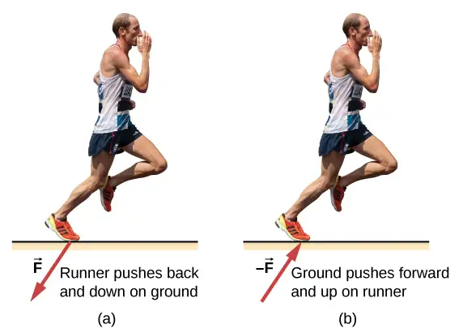
Example 5.9 Forces on a Stationary Object
The package in Figure 5.19 is sitting on a scale. For the scale and package at rest (i.e., not accelerating), show that the scale indicates the weight of the package.
![Figure a shows a package on a weighing scale on earth. The three objects are separated and the force vectors are shown. Force w acts downwards on the package and force s acts upwards on it. Force minus s acts downwards on the scale. Force minus w acts upwards from the earth. The pair w and s and the pair minus s and minus w are both labeled Newton’s first law pair. The pair s and minus s and the pair w and minus w are both labeled Newton’s third law pair. Figure b show two systems in isolation: the package scale system and the package earth system. The former has force s acting upwards and minus s acting downwards. The latter has force w acting downwards and force minus w acting upwards.](img/cnx-uphysics-05-05-package.webp)
Strategy
The forces on the package are \(\mathbf{\vec{S}},\) which is due to the scale, and \(-\mathbf{\vec{w}},\) which is due to Earth’s gravitational field. The reaction forces that the package exerts are \(-\mathbf{\vec{S}}\) on the scale and \(\mathbf{\vec{w}}\) on Earth. Because the package is not accelerating, application of the second law yields
so
The scale reading indicates the magnitude of the force \(\mathbf{\vec{S}}\), which is equal to the magnitude of the package’s weight.
Significance
The scale actually does not measure the weight of the package; it measures the force \(-\mathbf{\vec{S}}\) on its surface. If the system is accelerating, \(\mathbf{\vec{S}}\) and \(-\mathbf{\vec{w}}\) would not be equal, as explained in Applications of Newton’s Laws.
Example 5.10 Getting Up to Speed: Choosing the Correct System
A physics professor pushes a cart of demonstration equipment to a lecture hall (Figure 5.20). Her mass is 65.0 kg, the cart’s mass is 12.0 kg, and the equipment’s mass is 7.0 kg. Calculate the acceleration produced when the professor exerts a backward force of 150 N on the floor. All forces opposing the motion, such as friction on the cart’s wheels and air resistance, total 24.0 N.
![Figure shows a person pushing a cart from left to right. Near the feet of the person are the arrows labeled F subscript foot pointing left and F subscript floor pointing right. An arrow f pointing left is shown near the wheel of the cart. The arrows F subscript prof pointing right and F subscript cart pointing left are shown near her hands. The cart is circled and labeled system 2. The cart and person are circled together and this is labeled system 1. Two free body diagrams are shown. The first, of system 1 has F subscript floor pointing right, N pointing up, f pointing left and w pointing down. The second diagram, of system 2, has F subscript prof pointing right, N prime pointing up, f pointing left and w prime pointing down.](img/cnx-uphysics-05-05-profcart.webp)
Strategy
Since they accelerate as a unit, we define the system to be the professor, cart, and equipment. This is System 1 in Figure 5.20. The professor pushes backward with a force \(F_{\text{foot}}\) of 150 N. According to Newton’s third law, the floor exerts a forward reaction force \(F_{\text{floor}}\) of 150 N on System 1. Because all motion is horizontal, we can assume there is no net force in the vertical direction. Therefore, the problem is one-dimensional along the horizontal direction. As noted, friction f opposes the motion and is thus in the opposite direction of \(F_{\text{floor}}.\) We do not include the forces \(F_{\text{prof}}\) or \(F_{\text{cart}}\) because these are internal forces, and we do not include \(F_{\text{foot}}\) because it acts on the floor, not on the system. There are no other significant forces acting on System 1. If the net external force can be found from all this information, we can use Newton’s second law to find the acceleration as requested. See the free-body diagram in the figure.
Solution
Newton’s second law is given by
The net external force on System 1 is deduced from Figure 5.20 and the preceding discussion to be
The mass of System 1 is
These values of \(F_{\text{net}}\) and m produce an acceleration of
Significance
None of the forces between components of System 1, such as between the professor’s hands and the cart, contribute to the net external force because they are internal to System 1. Another way to look at this is that forces between components of a system cancel because they are equal in magnitude and opposite in direction. For example, the force exerted by the professor on the cart results in an equal and opposite force back on the professor. In this case, both forces act on the same system and therefore cancel. Thus, internal forces (between components of a system) cancel. Choosing System 1 was crucial to solving this problem.
Example 5.11 Force on the Cart: Choosing a New System
Calculate the force the professor exerts on the cart in Figure 5.20, using data from the previous example if needed.
Strategy
If we define the system of interest as the cart plus the equipment (System 2 in Figure 5.20), then the net external force on System 2 is the force the professor exerts on the cart minus friction. The force she exerts on the cart, \(F_{\text{prof}}\), is an external force acting on System 2. \(F_{\text{prof}}\) was internal to System 1, but it is external to System 2 and thus enters Newton’s second law for this system.
Solution
Newton’s second law can be used to find \(F_{\text{prof}}.\) We start with
The magnitude of the net external force on System 2 is
We solve for \(F_{\text{prof}}\), the desired quantity:
The value of f is given, so we must calculate net \(F_{\text{net}}.\) That can be done because both the acceleration and the mass of System 2 are known. Using Newton’s second law, we see that
where the mass of System 2 is 19.0 kg (\(m=12.0\:\text{kg}+7.0\:\text{kg}\)) and its acceleration was found to be \(a=1.5\:\text{m/s}^{2}\) in the previous example. Thus,
Now we can find the desired force:
Significance
This force is significantly less than the 150-N force the professor exerted backward on the floor. Not all of that 150-N force is transmitted to the cart; some of it accelerates the professor. The choice of a system is an important analytical step both in solving problems and in thoroughly understanding the physics of the situation (which are not necessarily the same things).
Check Your Understanding
Two blocks are at rest and in contact on a frictionless surface as shown below, with \(m_{1}=2.0\:\text{kg},\) \(m_{2}=6.0\:\text{kg},\) and applied force 24 N. (a) Find the acceleration of the system of blocks. (b) Suppose that the blocks are later separated. What force will give the second block, with the mass of 6.0 kg, the same acceleration as the system of blocks?
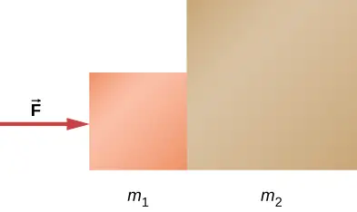
Answer
a. \(3.0\:\text{m}\text{/}\text{s}^{2}\); b. 18 N
Media
View this video to watch examples of action and reaction.
Media
View this video to watch examples of Newton’s laws and internal and external forces.
5.6 Common Forces¶
Learning Objectives
By the end of this section, you will be able to:
- Define normal and tension forces
- Distinguish between real and fictitious forces
- Apply Newton’s laws of motion to solve problems involving a variety of forces
Forces are given many names, such as push, pull, thrust, and weight. Traditionally, forces have been grouped into several categories and given names relating to their source, how they are transmitted, or their effects. Several of these categories are discussed in this section, together with some interesting applications. Further examples of forces are discussed later in this text.
A Catalog of Forces: Normal, Tension, and Other Examples of Forces¶
A catalog of forces will be useful for reference as we solve various problems involving force and motion. These forces include normal force, tension, friction, and spring force.
Normal force¶
Weight (also called the force of gravity) is a pervasive force that acts at all times and must be counteracted to keep an object from falling. You must support the weight of a heavy object by pushing up on it when you hold it stationary, as illustrated in Figure 5.21(a). But how do inanimate objects like a table support the weight of a mass placed on them, such as shown in Figure 5.21(b)? When the bag of dog food is placed on the table, the table sags slightly under the load. This would be noticeable if the load were placed on a card table, but even a sturdy oak table deforms when a force is applied to it. Unless an object is deformed beyond its limit, it will exert a restoring force much like a deformed spring (or a trampoline or diving board). The greater the deformation, the greater the restoring force. Thus, when the load is placed on the table, the table sags until the restoring force becomes as large as the weight of the load. At this point, the net external force on the load is zero. That is the situation when the load is stationary on the table. The table sags quickly and the sag is slight, so we do not notice it. But it is similar to the sagging of a trampoline when you climb onto it.
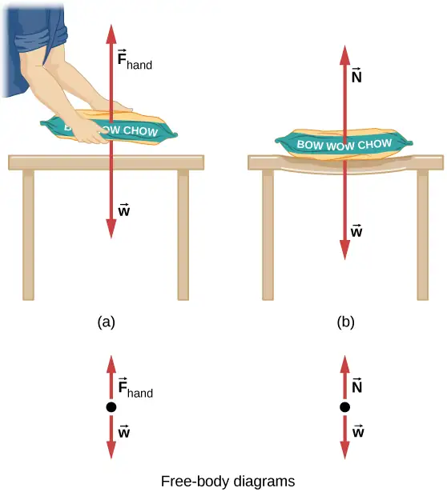
We must conclude that whatever supports a load, be it animate or not, must supply an upward force equal to the weight of the load, as we assumed in a few of the previous examples. If the force supporting the weight of an object, or a load, is perpendicular to the surface of contact between the load and its support, this force is defined as a normal force and here is given by the symbol \(\mathbf{\vec{N}}.\) (This is not the newton unit for force, or N.) The word normal means perpendicular to a surface. This means that the normal force experienced by an object resting on a horizontal surface can be expressed in vector form as follows:
In scalar form, this becomes
The normal force can be less than the object’s weight if the object is on an incline.
Example 5.12 Weight on an Incline
Consider the skier on the slope in Figure 5.22. Her mass including equipment is 60.0 kg. (a) What is her acceleration if friction is negligible? (b) What is her acceleration if friction is 45.0 N?
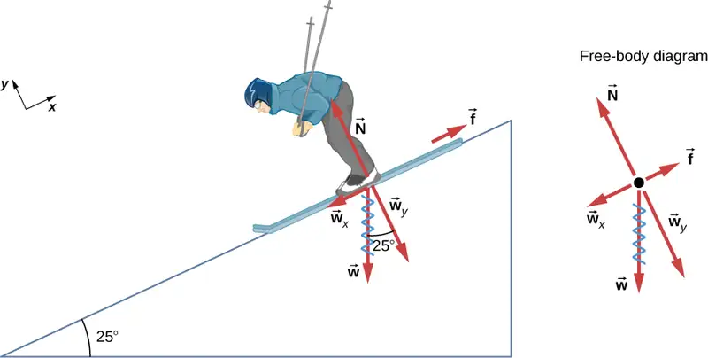
Strategy
This is a two-dimensional problem, since not all forces on the skier (the system of interest) are parallel. The approach we have used in two-dimensional kinematics also works well here. Choose a convenient coordinate system and project the vectors onto its axes, creating two one-dimensional problems to solve. The most convenient coordinate system for motion on an incline is one that has one coordinate parallel to the slope and one perpendicular to the slope. (Motions along mutually perpendicular axes are independent.) We use x and y for the parallel and perpendicular directions, respectively. This choice of axes simplifies this type of problem, because there is no motion perpendicular to the slope and the acceleration is downslope. Regarding the forces, friction is drawn in opposition to motion (friction always opposes forward motion) and is always parallel to the slope, \(w_{x}\) is drawn parallel to the slope and downslope (it causes the motion of the skier down the slope), and \(w_{y}\) is drawn as the component of weight perpendicular to the slope. Then, we can consider the separate problems of forces parallel to the slope and forces perpendicular to the slope.
Solution
The magnitude of the component of weight parallel to the slope is
and the magnitude of the component of the weight perpendicular to the slope is
a. Neglect friction. Since the acceleration is parallel to the slope, we need only consider forces parallel to the slope. (Forces perpendicular to the slope add to zero, since there is no acceleration in that direction.) The forces parallel to the slope are the component of the skier’s weight parallel to slope \(w_{x}\) and friction f. Using Newton’s second law, with subscripts to denote quantities parallel to the slope,
where \(F_{\text{net}\:x}=w_{x}=-mg\:\sin\:25{}^{\circ},\) assuming no friction for this part. Therefore,
is the acceleration.
b. Include friction. We have a given value for friction, and we know its direction is parallel to the slope and it opposes motion between surfaces in contact. So the net external force is
Substituting this into Newton’s second law, \(a_{x}=F_{\text{net}\:x}\text{/}m,\) gives
We substitute known values to obtain
This gives us
which is the acceleration parallel to the incline when there is 45.0 N of opposing friction.
Significance
Since friction always opposes motion between surfaces, the acceleration is smaller when there is friction than when there is none. It is a general result that if friction on an incline is negligible, then the acceleration down the incline is \(a=g\:\sin\:\theta\), regardless of mass. As discussed previously, all objects fall with the same acceleration in the absence of air resistance. Similarly, all objects, regardless of mass, slide down a frictionless incline with the same acceleration (if the angle is the same).
When an object rests on an incline that makes an angle \(\theta\) with the horizontal, the force of gravity acting on the object is divided into two components: a force acting perpendicular to the plane, \(w_{y}\), and a force acting parallel to the plane, \(w_{x}\) (Figure 5.23). The normal force \(\mathbf{\vec{N}}\) is typically equal in magnitude and opposite in direction to the perpendicular component of the weight \(w_{y}\). The force acting parallel to the plane, \(w_{x}\), causes the object to accelerate down the incline.
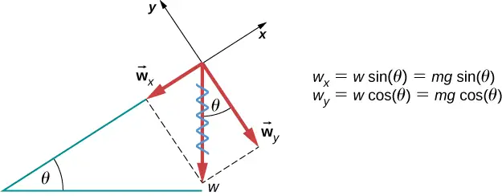
Be careful when resolving the weight of the object into components. If the incline is at an angle \(\theta\) to the horizontal, then the magnitudes of the weight components are
and
We use the second equation to write the normal force experienced by an object resting on an inclined plane:
object at rest or sliding on an inclined plane. Instead of memorizing these equations, it is helpful to be able to determine them from reason. To do this, we draw the right angle formed by the three weight vectors. The angle \(\theta\) of the incline is the same as the angle formed between w and \(w_{y}\). Knowing this property, we can use trigonometry to determine the magnitude of the weight components:
Check Your Understanding
A force of 1150 N acts parallel to a ramp to push a 250-kg gun safe into a moving van. The ramp is frictionless and inclined at \(17{}^{\circ}.\) (a) What is the acceleration of the safe up the ramp? (b) If we consider friction in this problem, with a friction force of 120 N, what is the acceleration of the safe?
Answer
a. \(1.7\:\text{m/s}^{2};\) b. \(1.3\:\text{m/s}^{2}\)
Tension¶
A tension is a force along the length of a medium; in particular, it is a pulling force that acts along a stretched flexible connector, such as a rope or cable. The word “tension” comes from a Latin word meaning “to stretch.” Not coincidentally, the flexible cords that carry muscle forces to other parts of the body are called tendons.
Any flexible connector, such as a string, rope, chain, wire, or cable, can only exert a pull parallel to its length; thus, a force carried by a flexible connector is a tension with a direction parallel to the connector. Tension is a pull in a connector. Consider the phrase: “You can’t push a rope.” Instead, tension force pulls outward along the two ends of a rope.
Consider a person holding a mass on a rope, as shown in Figure 5.24. If the 5.00-kg mass in the figure is stationary, then its acceleration is zero and the net force is zero. The only external forces acting on the mass are its weight and the tension supplied by the rope. Thus,
where T and w are the magnitudes of the tension and weight, respectively, and their signs indicate direction, with up being positive. As we proved using Newton’s second law, the tension equals the weight of the supported mass:
object hanging at rest. Thus, for a 5.00-kg mass (neglecting the mass of the rope), we see that
If we cut the rope and insert a spring, the spring would extend a length corresponding to a force of 49.0 N, providing a direct observation and measure of the tension force in the rope.
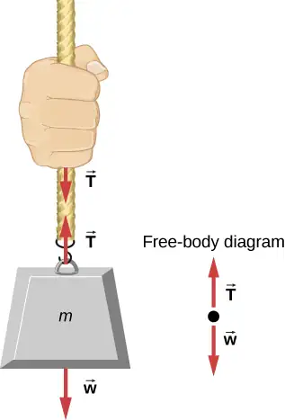
Flexible connectors are often used to transmit forces around corners, such as in a hospital traction system, a tendon, or a bicycle brake cable. If there is no friction, the tension transmission is undiminished; only its direction changes, and it is always parallel to the flexible connector, as shown in Figure 5.25.

Example 5.13 What Is the Tension in a Tightrope?
Calculate the tension in the wire supporting the 70.0-kg tightrope walker shown in Figure 5.26.
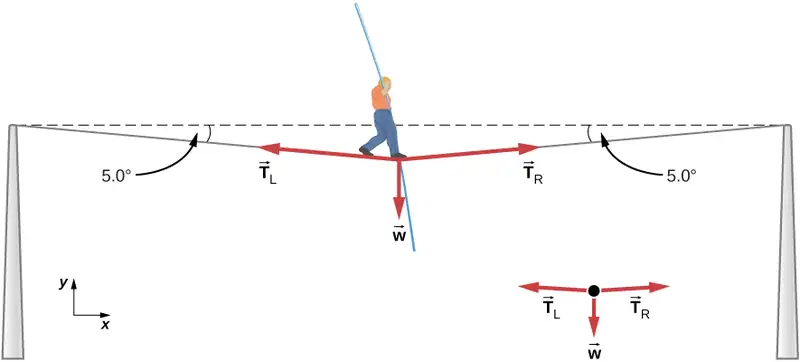
Strategy
As you can see in Figure 5.26, the wire is bent under the person’s weight. Thus, the tension on either side of the person has an upward component that can support his weight. As usual, forces are vectors represented pictorially by arrows that have the same direction as the forces and lengths proportional to their magnitudes. The system is the tightrope walker, and the only external forces acting on him are his weight \(\mathbf{\vec{w}}\) and the two tensions \({\mathbf{\vec{T}}}_{\text{L}}\) (left tension) and \({\mathbf{\vec{T}}}_{\text{R}}\) (right tension). It is reasonable to neglect the weight of the wire. The net external force is zero, because the system is static. We can use trigonometry to find the tensions. One conclusion is possible at the outset—we can see from Figure 5.26(b) that the magnitudes of the tensions \(T_{\text{L}}\) and \(T_{\text{R}}\) must be equal. We know this because there is no horizontal acceleration in the rope and the only forces acting to the left and right are \(T_{\text{L}}\) and \(T_{\text{R}}\). Thus, the magnitude of those horizontal components of the forces must be equal so that they cancel each other out.
Whenever we have two-dimensional vector problems in which no two vectors are parallel, the easiest method of solution is to pick a convenient coordinate system and project the vectors onto its axes. In this case, the best coordinate system has one horizontal axis (x) and one vertical axis (y).
Solution
First, we need to resolve the tension vectors into their horizontal and vertical components. It helps to look at a new free-body diagram showing all horizontal and vertical components of each force acting on the system (Figure 5.27).
![There are three figures. The first one shows TL, at an angle of 5 degrees with the horizontal, pointing left. Two dotted arrows, TLx, pointing straight left and TLy pointing straight up, form a right triangle with TL. The second figure shows TR, at an angle of 5 degrees with the horizontal, pointing right. Two dotted arrows, TRx, pointing straight right and TRy pointing straight up, form a right triangle with TR. The third figure shows a free body diagram. TRx points right. TRy and TLy point up. TLx points left. W points down. Net Fx is equal to 0 and net Fy is qual to 0.](img/cnx-uphysics-05-06-tropefbd.webp)
Consider the horizontal components of the forces (denoted with a subscript x):
The net external horizontal force \(F_{\text{net}\:x}=0,\) since the person is stationary. Thus,
Now observe Figure 5.27. You can use trigonometry to determine the magnitude of \(T_{\text{L}}\) and \(T_{\text{R}}\):
Equating TLx and TRx:
Thus,
as predicted. Now, considering the vertical components (denoted by a subscript y), we can solve for T. Again, since the person is stationary, Newton’s second law implies that \(F_{\text{net}\:y}=0\). Thus, as illustrated in the free-body diagram,
We can use trigonometry to determine the relationships among \(T_{\text{Ly}},T_{\text{Ry}},\) and T. As we determined from the analysis in the horizontal direction, \(T_{\text{L}}=T_{\text{R}}=T\):
Now we can substitute the vales for \(T_{\text{Ly}}\) and \(T_{\text{Ry}}\), into the net force equation in the vertical direction:
and
so
and the tension is
Significance
The vertical tension in the wire acts as a force that supports the weight of the tightrope walker. The tension is almost six times the 686-N weight of the tightrope walker. Since the wire is nearly horizontal, the vertical component of its tension is only a fraction of the tension in the wire. The large horizontal components are in opposite directions and cancel, so most of the tension in the wire is not used to support the weight of the tightrope walker.
If we wish to create a large tension, all we have to do is exert a force perpendicular to a taut flexible connector, as illustrated in Figure 5.26. As we saw in Example 5.13, the weight of the tightrope walker acts as a force perpendicular to the rope. We saw that the tension in the rope is related to the weight of the tightrope walker in the following way:
We can extend this expression to describe the tension T created when a perpendicular force \((F_{\perp})\) is exerted at the middle of a flexible connector:
The angle between the horizontal and the bent connector is represented by \(\theta\). In this case, T becomes large as \(\theta\) approaches zero. Even the relatively small weight of any flexible connector will cause it to sag, since an infinite tension would result if it were horizontal (i.e., \(\theta=0\) and sin \(\theta=0\)). For example, Figure 5.28 shows a situation where we wish to pull a car out of the mud when no tow truck is available. Each time the car moves forward, the chain is tightened to keep it as straight as possible. The tension in the chain is given by \(T=\frac{F_{\perp}}{2\:\sin\:\theta},\) and since \(\theta\) is small, T is large. This situation is analogous to the tightrope walker, except that the tensions shown here are those transmitted to the car and the tree rather than those acting at the point where \(F_{\perp}\) is applied.
Check Your Understanding
One end of a 3.0-m rope is tied to a tree; the other end is tied to a car stuck in the mud. The motorist pulls sideways on the midpoint of the rope, displacing it a distance of 0.25 m. If he exerts a force of 200.0 N under these conditions, determine the force exerted on the car.
Answer
\(6.0\:\times\:{10}^{2}\) N
In Applications of Newton’s Laws, we extend the discussion on tension in a cable to include cases in which the angles shown are not equal.
Friction¶
Friction is a resistive force opposing motion or its tendency. Imagine an object at rest on a horizontal surface. The net force acting on the object must be zero, leading to equality of the weight and the normal force, which act in opposite directions. If the surface is tilted, the normal force balances the component of the weight perpendicular to the surface. If the object does not slide downward, the component of the weight parallel to the inclined plane is balanced by friction. Friction is discussed in greater detail in the next chapter.
Spring force¶
A spring is a special medium with a specific atomic structure that has the ability to restore its shape, if deformed. To restore its shape, a spring exerts a restoring force that is proportional to and in the opposite direction in which it is stretched or compressed. This is the statement of a law known as Hooke’s law, which has the mathematical form
equation callout
The constant of proportionality k is a measure of the spring’s stiffness. The line of action of this force is parallel to the spring axis, and the sense of the force is in the opposite direction of the displacement vector (Figure 5.29). The displacement must be measured from the relaxed position; \(x=0\) when the spring is relaxed.
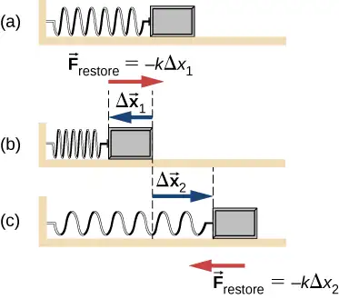
Real Forces and Inertial Frames¶
There is another distinction among forces: Some forces are real, whereas others are not. Real forces have some physical origin, such as a gravitational pull. In contrast, fictitious forces arise simply because an observer is in an accelerating or noninertial frame of reference, such as one that rotates (like a merry-go-round) or undergoes linear acceleration (like a car slowing down). For example, if a satellite is heading due north above Earth’s Northern Hemisphere, then to an observer on Earth, it will appear to experience a force to the west that has no physical origin. Instead, Earth is rotating toward the east and moves east under the satellite. In Earth’s frame, this looks like a westward force on the satellite, or it can be interpreted as a violation of Newton’s first law (the law of inertia). We can identify a fictitious force by asking the question, “What is the reaction force?” If we cannot name the reaction force, then the force we are considering is fictitious. In the example of the satellite, the reaction force would have to be an eastward force on Earth. Recall that an inertial frame of reference is one in which all forces are real and, equivalently, one in which Newton’s laws have the simple forms given in this chapter.
Earth’s rotation is slow enough that Earth is nearly an inertial frame. You ordinarily must perform precise experiments to observe fictitious forces and the slight departures from Newton’s laws, such as the effect just described. On a large scale, such as for the rotation of weather systems and ocean currents, the effects can be easily observed (Figure 5.30).
The crucial factor in determining whether a frame of reference is inertial is whether it accelerates or rotates relative to a known inertial frame. Unless stated otherwise, all phenomena discussed in this text are in inertial frames.
The forces discussed in this section are real forces, but they are not the only real forces. Lift and thrust, for example, are more specialized real forces. In the long list of forces, are some more basic than others? Are some different manifestations of the same underlying force? The answer to both questions is yes, as you will see in the treatment of modern physics later in the text.
Media
Explore forces and motion in this interactive simulation as you push household objects up and down a ramp. Lower and raise the ramp to see how the angle of inclination affects the parallel forces. Graphs show forces, energy, and work.
Media
Stretch and compress springs in the simulation below to explore the relationships among force, spring constant, and displacement. Investigate what happens when two springs are connected in series and in parallel.
5.7 Drawing Free-Body Diagrams¶
Learning Objectives
By the end of this section, you will be able to:
- Explain the rules for drawing a free-body diagram
- Construct free-body diagrams for different situations
The first step in describing and analyzing most phenomena in physics involves the careful drawing of a free-body diagram. Free-body diagrams have been used in examples throughout this chapter. Remember that a free-body diagram must only include the external forces acting on the body of interest. Once we have drawn an accurate free-body diagram, we can apply Newton’s first law if the body is in equilibrium (balanced forces; that is, \(F_{\text{net}}=0\)) or Newton’s second law if the body is accelerating (unbalanced force; that is, \(F_{\text{net}}\neq 0\)).
In Forces, we gave a brief problem-solving strategy to help you understand free-body diagrams. Here, we add some details to the strategy that will help you in constructing these diagrams.
Problem-Solving Strategy: Constructing Free-Body Diagrams
Observe the following rules when constructing a free-body diagram:
- Draw the object under consideration; it does not have to be artistic. At first, you may want to draw a circle around the object of interest to be sure you focus on labeling the forces acting on the object. If you are treating the object as a particle (no size or shape and no rotation), represent the object as a point. We often place this point at the origin of an xy-coordinate system.
- Include all forces that act on the object, representing these forces as vectors. Consider the types of forces described in Common Forces—normal force, friction, tension, and spring force—as well as weight and applied force. Do not include the net force on the object. With the exception of gravity, all of the forces we have discussed require direct contact with the object. However, forces that the object exerts on its environment must not be included. We never include both forces of an action-reaction pair.
- Convert the free-body diagram into a more detailed diagram showing the x- and y-components of a given force (this is often helpful when solving a problem using Newton’s first or second law). In this case, place a squiggly line through the original vector to show that it is no longer in play—it has been replaced by its x- and y-components.
- If there are two or more objects, or bodies, in the problem, draw a separate free-body diagram for each object.
Note: If there is acceleration, we do not directly include it in the free-body diagram; however, it may help to indicate acceleration outside the free-body diagram. You can label it in a different color to indicate that it is separate from the free-body diagram.
Let’s apply the problem-solving strategy in drawing a free-body diagram for a sled. In Figure 5.31(a), a sled is pulled by force P at an angle of \(30{}^{\circ}\). In part (b), we show a free-body diagram for this situation, as described by steps 1 and 2 of the problem-solving strategy. In part (c), we show all forces in terms of their x- and y-components, in keeping with step 3.
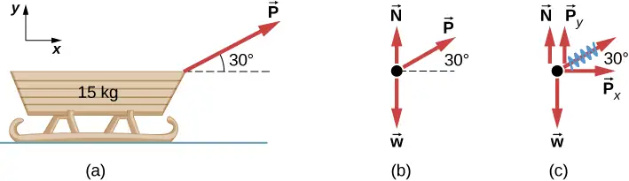
Example 5.14 Two Blocks on an Inclined Plane
Construct the free-body diagram for object A and object B in Figure 5.32. Assume that the rope pulls object A so that it slides upward, and that object B is sliding down the slope.
Strategy
We follow the four steps listed in the problem-solving strategy.
Solution
We start by creating a diagram for the first object of interest. In Figure 5.32(a), object A is isolated (circled) and represented by a dot.
![Figure a shows two objects on an inclined plane, sloping down to the left. Object A is on top of object B. A free body diagram shows T pointing right and up, parallel to the plane, N subscript BA pointing left and up, perpendicular to the plane, f subscript BA pointing left and down, parallel to the plane and w subscript A pointing vertically down. W subscript A is weight of block A, T is tension, N subscript BA is normal force exerted by B on A, f subscript BA is friction force exerted by B on A. Figure b shows the objects on the slope in the same manner. A free body diagram has f subscript B and f subscript AB pointing right and up, parallel to the slope, N subscript B pointing left and up perpendicular to the slope, w subscript B pointing vertically down and N subscript AB pointing down and right, perpendicular to the slope. W subscript B is weight of block B, N subscript AB is normal force exerted by A on B, N subscript B is normal force exerted by the incline plane on B. f subscript AB is friction force exerted by A on B. f subscript B is friction force exerted by the incline plane on B.](img/cnx-uphysics-05-07-blockab.webp)
We now include any force that acts on the body. Here, no applied force is present. The weight of the object acts as a force pointing vertically downward, and the presence of the cord indicates a force of tension pointing away from the object. Object A has one interface and hence experiences a normal force, directed away from the interface. The source of this force is object B, and this normal force is labeled accordingly. Since object B s sliding down and object A s sliding up with respect to the interface, so the friction \(f_{\text{BA}}\) is directed downward parallel to the inclined plane.
As noted in step 4 of the problem-solving strategy, we then construct the free-body diagram in Figure 5.32(b) using the same approach. Object B experiences two normal forces and two friction forces due to the presence of two contact surfaces. The interface with the inclined plane exerts external forces of \(N_{\text{B}}\) and \(f_{\text{B}}\), and the interface with object B exerts the normal force \(N_{\text{AB}}\) and friction \(f_{\text{AB}}\); \(N_{\text{AB}}\) is directed away from object B, and \(f_{\text{AB}}\) is opposing the tendency of the relative motion of object B with respect to object A.
Significance
The object under consideration in each part of this problem was circled in gray. When you are first learning how to draw free-body diagrams, you will find it helpful to circle the object before deciding what forces are acting on that particular object. This focuses your attention, preventing you from considering forces that are not acting on the body. If the objects were not sliding as described, we would need to know more about the strength of the tension force in order to determine the directions of the friction forces.
Example 5.15 Two Blocks in Contact
A force is applied to two blocks in contact, as shown. Draw the reaction forces between the two blocks.
Strategy
Draw a free-body diagram for each block. Be sure to consider Newton’s third law at the interface where the two blocks touch.
Solution
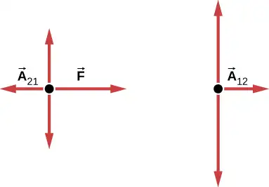
Significance
\({\mathbf{\vec{A}}}_{21}\) is the action force of block 2 on block 1. \({\mathbf{\vec{A}}}_{12}\) is the reaction force of block 1 on block 2. We use these free-body diagrams in Applications of Newton’s Laws.
Example 5.16 Block on the Table (Coupled Blocks)
A block rests on the table, as shown. A light rope is attached to it and runs over a pulley. The other end of the rope is attached to a second block. The two blocks are said to be coupled. Block \(m_{2}\) exerts a force due to its weight, which causes the system (two blocks and a string) to accelerate.
Strategy
We assume that the string has no mass so that we do not have to consider it as a separate object. Draw a free-body diagram for each block.
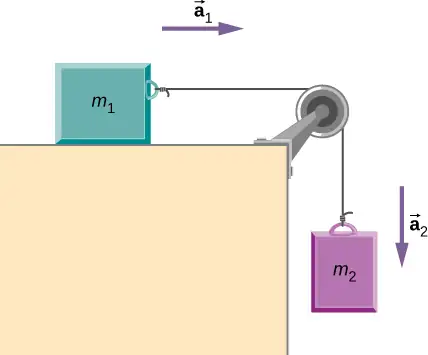
Solution
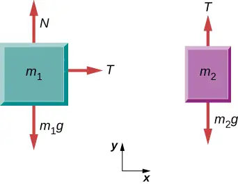
Significance
Each block accelerates (notice the labels shown for \({\mathbf{\vec{a}}}_{1}\) and \({\mathbf{\vec{a}}}_{2}\)); however, assuming the string remains taut, the magnitudes of acceleration are equal. Thus, we have \(|{\mathbf{\vec{a}}}_{1}|=|{\mathbf{\vec{a}}}_{2}|\). If we were to continue solving the problem, we could simply call the acceleration \(\mathbf{\vec{a}}\). Also, we use two free-body diagrams because we are usually finding tension T, which may require us to use a system of two equations in this type of problem. The tension is the same on both \(m_{1}\:\text{and}\:m_{2}\).
Check Your Understanding
(a) Draw the free-body diagram for the situation shown. (b) Redraw it showing components; use x-axes parallel to the two ramps.
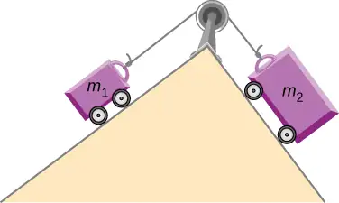
Answer
 ;
;
![Figure a shows a free body diagram of an object on a line that slopes down to the right. Arrow T from the object points right and up, parallel to the slope. Arrow N1 points left and up, perpendicular to the slope. Arrow w1 points vertically down. Arrow w1x points left and down, parallel to the slope. Arrow w1y points right and down, perpendicular to the slope. Figure b shows a free body diagram of an object on a line that slopes down to the left. Arrow N2 from the object points right and up, perpendicular to the slope. Arrow T points left and up, parallel to the slope. Arrow w2 points vertically down. Arrow w2y points left and down, perpendicular to the slope. Arrow w2x points right and down, parallel to the slope.](img/cnx-uphysics-05-07-2carts-b-img.webp)
Media
Engage the simulation below to predict, qualitatively, how an external force will affect the speed and direction of an object’s motion. Explain the effects with the help of a free-body diagram. Use free-body diagrams to draw position, velocity, acceleration, and force graphs, and vice versa. Explain how the graphs relate to one another. Given a scenario or a graph, sketch all four graphs.
Chapter Review¶
Key Terms¶
- dynamics
- study of how forces affect the motion of objects and systems
- external force
- force acting on an object or system that originates outside of the object or system
- force
- push or pull on an object with a specific magnitude and direction; can be represented by vectors or expressed as a multiple of a standard force
- free fall
- situation in which the only force acting on an object is gravity
- free-body diagram
- sketch showing all external forces acting on an object or system; the system is represented by a single isolated point, and the forces are represented by vectors extending outward from that point
- Hooke’s law
- in a spring, a restoring force proportional to and in the opposite direction of the imposed displacement
- inertia
- ability of an object to resist changes in its motion
- inertial reference frame
- reference frame moving at constant velocity relative to an inertial frame is also inertial; a reference frame accelerating relative to an inertial frame is not inertial
- law of inertia
- see Newton’s first law of motion
- net external force
- vector sum of all external forces acting on an object or system; causes a mass to accelerate
- newton
- SI unit of force; 1 N is the force needed to accelerate an object with a mass of 1 kg at a rate of \(1\:\text{m/s}^{2}\)
- Newton’s first law of motion
- body at rest remains at rest or, if in motion, remains in motion at constant velocity unless acted on by a net external force; also known as the law of inertia
- Newton’s second law of motion
- acceleration of a system is directly proportional to and in the same direction as the net external force acting on the system and is inversely proportional to its mass
- Newton’s third law of motion
- whenever one body exerts a force on a second body, the first body experiences a force that is equal in magnitude and opposite in direction to the force that it exerts
- normal force
- force supporting the weight of an object, or a load, that is perpendicular to the surface of contact between the load and its support; the surface applies this force to an object to support the weight of the object
- tension
- pulling force that acts along a stretched flexible connector, such as a rope or cable
- thrust
- reaction force that pushes a body forward in response to a backward force
- weight
- force \(\mathbf{\vec{w}}\) due to gravity acting on an object of mass m
Key Equations¶
| Net external force | \({\mathbf{\vec{F}}}_{\text{net}}=\displaystyle \sum\mathbf{\vec{F}}={\mathbf{\vec{F}}}_{1}+{\mathbf{\vec{F}}}_{2}+\cdots\) |
| Newton’s first law | \(\mathbf{\vec{v}}=\:\text{constant when}\:{\mathbf{\vec{F}}}_{\text{net}}=\mathbf{\overrightarrow{0}}\:\text{N}\) |
| Newton’s second law, vector form | \({\mathbf{\vec{F}}}_{\text{net}}=\displaystyle \sum\mathbf{\vec{F}}=m\mathbf{\vec{a}}\) |
| Newton’s second law, scalar form | \(F_{\text{net}}=ma\) |
| Newton’s second law, component form | \(\displaystyle \sum{\mathbf{\vec{F}}}_{x}=m{\mathbf{\vec{a}}}_{x}{,}\:\displaystyle \sum{\mathbf{\vec{F}}}_{y}=m{\mathbf{\vec{a}}}_{y},\:\text{and}\:\displaystyle \sum{\mathbf{\vec{F}}}_{z}=m{\mathbf{\vec{a}}}_{z}.\) |
| Newton’s second law, momentum form | \({\mathbf{\vec{F}}}_{\text{net}}=\frac{d\mathbf{\vec{p}}}{dt}\) |
| Definition of weight, vector form | \(\mathbf{\vec{w}}=m\mathbf{\vec{g}}\) |
| Definition of weight, scalar form | \(w=mg\) |
| Newton’s third law | \({\mathbf{\vec{F}}}_{\text{AB}}=-{\mathbf{\vec{F}}}_{\text{BA}}\) |
| Normal force on an object resting on a horizontal surface, vector form |
\(\mathbf{\vec{N}}=-m\mathbf{\vec{g}}\) |
| Normal force on an object resting on a horizontal surface, scalar form |
\(N=mg\) |
| Normal force on an object resting on an inclined plane, scalar form |
\(N=mg\cos\:\theta\) |
| Restoring force by a spring displaced by x from the relaxed position |
\(\mathbf{\vec{F}}=-k\mathbf{\vec{x}}.\) |
| Tension in a cable supporting an object of mass m at rest, scalar form |
\(T=w=mg\) |
Summary¶
5.1 Forces¶
- Dynamics is the study of how forces affect the motion of objects, whereas kinematics simply describes the way objects move.
- Force is a push or pull that can be defined in terms of various standards, and it is a vector that has both magnitude and direction.
- External forces are any outside forces that act on a body. A free-body diagram is a drawing of all external forces acting on a body.
- The SI unit of force is the newton (N).
5.2 Newton's First Law¶
- According to Newton’s first law, there must be a cause for any change in velocity (a change in either magnitude or direction) to occur. This law is also known as the law of inertia.
- Friction is an external force that causes an object to slow down.
- Inertia is the tendency of an object to remain at rest or remain in motion. Inertia is related to an object’s mass.
- If an object’s velocity relative to a given frame is constant, then the frame is inertial. This means that for an inertial reference frame, Newton’s first law is valid.
- Equilibrium is achieved when the forces on a system are balanced.
- A net force of zero means that an object is either at rest or moving with constant velocity; that is, it is not accelerating.
5.3 Newton's Second Law¶
- An external force acts on a system from outside the system, as opposed to internal forces, which act between components within the system.
- Newton’s second law of motion says that the net external force on an object with a certain mass is directly proportional to and in the same direction as the acceleration of the object.
- Newton’s second law can also describe net force as the instantaneous rate of change of momentum. Thus, a net external force causes nonzero acceleration.
5.4 Mass and Weight¶
- Mass is the quantity of matter in a substance.
- The weight of an object is the net force on a falling object, or its gravitational force. The object experiences acceleration due to gravity.
- Some upward resistance force from the air acts on all falling objects on Earth, so they can never truly be in free fall.
- Careful distinctions must be made between free fall and weightlessness using the definition of weight as force due to gravity acting on an object of a certain mass.
5.5 Newton’s Third Law¶
- Newton’s third law of motion represents a basic symmetry in nature, with an experienced force equal in magnitude and opposite in direction to an exerted force.
- Two equal and opposite forces do not cancel because they act on different systems.
- Action-reaction pairs include a swimmer pushing off a wall, helicopters creating lift by pushing air down, and an octopus propelling itself forward by ejecting water from its body. Rockets, airplanes, and cars are pushed forward by a thrust reaction force.
- Choosing a system is an important analytical step in understanding the physics of a problem and solving it.
5.6 Common Forces¶
- When an object rests on a surface, the surface applies a force to the object that supports the weight of the object. This supporting force acts perpendicular to and away from the surface. It is called a normal force.
- When an object rests on a nonaccelerating horizontal surface, the magnitude of the normal force is equal to the weight of the object.
- When an object rests on an inclined plane that makes an angle \(\theta\) with the horizontal surface, the weight of the object can be resolved into components that act perpendicular and parallel to the surface of the plane.
- The pulling force that acts along a stretched flexible connector, such as a rope or cable, is called tension. When a rope supports the weight of an object at rest, the tension in the rope is equal to the weight of the object. If the object is accelerating, tension is greater than weight, and if it is accelerating opposite to the motion, tension is less than weight.
- The force of friction is a force experienced by a moving object (or an object that has a tendency to move) parallel to the interface opposing the motion (or its tendency).
- The force developed in a spring obeys Hooke’s law, according to which its magnitude is proportional to the displacement and has a sense in the opposite direction of the displacement.
- Real forces have a physical origin, whereas fictitious forces occur because the observer is in an accelerating or noninertial frame of reference.
5.7 Drawing Free-Body Diagrams¶
- To draw a free-body diagram, we draw the object of interest, draw all forces acting on that object, and resolve all force vectors into x- and y-components. We must draw a separate free-body diagram for each object in the problem.
- A free-body diagram is a useful means of describing and analyzing all the forces that act on a body to determine equilibrium according to Newton’s first law or acceleration according to Newton’s second law.
Conceptual Questions¶
5.1 Forces¶
1. What properties do forces have that allow us to classify them as vectors?
Answer
Forces are directional and have magnitude.
5.2 Newton's First Law¶
2. Taking a frame attached to Earth as inertial, which of the following objects cannot have inertial frames attached to them, and which are inertial reference frames?
(a) A car moving at constant velocity
(b) A car that is accelerating
(c) An elevator in free fall
(d) A space capsule orbiting Earth
(e) An elevator descending uniformly
3. A woman was transporting an open box of cupcakes to a school party. The car in front of her stopped suddenly; she applied her brakes immediately. She was wearing her seat belt and suffered no physical harm (just a great deal of embarrassment), but the cupcakes flew into the dashboard and became “smushcakes.” Explain what happened.
Answer
The cupcake velocity before the braking action was the same as that of the car. Therefore, the cupcakes were unrestricted bodies in motion, and when the car suddenly stopped, the cupcakes kept moving forward according to Newton’s first law.
5.3 Newton's Second Law¶
4. Why can we neglect forces such as those holding a body together when we apply Newton’s second law?
5. A rock is thrown straight up. At the top of the trajectory, the velocity is momentarily zero. Does this imply that the force acting on the object is zero? Explain your answer.
Answer
No. If the force were zero at this point, then there would be nothing to change the object’s momentary zero velocity. Since we do not observe the object hanging motionless in the air, the force could not be zero.
5.4 Mass and Weight¶
6. What is the relationship between weight and mass? Which is an intrinsic, unchanging property of a body?
7. How much does a 70-kg astronaut weight in space, far from any celestial body? What is her mass at this location?
Answer
The astronaut is truly weightless in the location described, because there is no large body (planet or star) nearby to exert a gravitational force. Her mass is 70 kg regardless of where she is located.
8. Which of the following statements is accurate?
(a) Mass and weight are the same thing expressed in different units.
(b) If an object has no weight, it must have no mass.
(c) If the weight of an object varies, so must the mass.
(d) Mass and inertia are different concepts.
(e) Weight is always proportional to mass.
9. When you stand on Earth, your feet push against it with a force equal to your weight. Why doesn’t Earth accelerate away from you?
Answer
The force you exert (a contact force equal in magnitude to your weight) is small. Earth is extremely massive by comparison. Thus, the acceleration of Earth would be incredibly small. To see this, use Newton’s second law to calculate the acceleration you would cause if your weight is 600.0 N and the mass of Earth is \(6.00\:\times\:{10}^{24}\:\text{kg}\).
10. How would you give the value of \(\mathbf{\vec{g}}\) in vector form?
5.5 Newton’s Third Law¶
11. Identify the action and reaction forces in the following situations: (a) Earth attracts the Moon, (b) a boy kicks a football, (c) a rocket accelerates upward, (d) a car accelerates forward, (e) a high jumper leaps, and (f) a bullet is shot from a gun.
Answer
a. action: Earth pulls on the Moon, reaction: Moon pulls on Earth; b. action: foot applies force to ball, reaction: ball applies force to foot; c. action: rocket pushes on gas, reaction: gas pushes back on rocket; d. action: car tires push backward on road, reaction: road pushes forward on tires; e. action: jumper pushes down on ground, reaction: ground pushes up on jumper; f. action: gun pushes forward on bullet, reaction: bullet pushes backward on gun.
12. Suppose that you are holding a cup of coffee in your hand. Identify all forces on the cup and the reaction to each force.
13. (a) Why does an ordinary rifle recoil (kick backward) when fired? (b) The barrel of a recoilless rifle is open at both ends. Describe how Newton’s third law applies when one is fired. (c) Can you safely stand close behind one when it is fired?
Answer
a. The rifle (the shell supported by the rifle) exerts a force to expel the bullet; the reaction to this force is the force that the bullet exerts on the rifle (shell) in opposite direction. b. In a recoilless rifle, the shell is not secured in the rifle; hence, as the bullet is pushed to move forward, the shell is pushed to eject from the opposite end of the barrel. c. It is not safe to stand behind a recoilless rifle.
5.6 Common Forces¶
14. A table is placed on a rug. Then a book is placed on the table. What does the floor exert a normal force on?
15. A particle is moving to the right. (a) Can the force on it be acting to the left? If yes, what would happen? (b) Can that force be acting downward? If yes, why?
Answer
a. Yes, the force can be acting to the left; the particle would experience acceleration opposite to the motion and lose speed. B. Yes, the force can be acting downward because its weight acts downward even as it moves to the right.
5.7 Drawing Free-Body Diagrams¶
16. In completing the solution for a problem involving forces, what do we do after constructing the free-body diagram? That is, what do we apply?
17. If a book is located on a table, how many forces should be shown in a free-body diagram of the book? Describe them.
Answer
two forces of different types: weight acting downward and normal force acting upward
18. If the book in the previous question is in free fall, how many forces should be shown in a free-body diagram of the book? Describe them.
Problems¶
5.1 Forces¶
19. Two ropes are attached to a tree, and forces of \({\mathbf{\vec{F}}}_{1}=2.0\mathbf{\hat{i}}+4.0\mathbf{\hat{j}}\:\text{N}\) and \({\mathbf{\vec{F}}}_{2}=3.0\mathbf{\hat{i}}+6.0\mathbf{\hat{j}}\:\text{N}\) are applied. The forces are coplanar (in the same plane). (a) What is the resultant (net force) of these two force vectors? (b) Find the magnitude and direction of this net force.
Answer
a. \({\mathbf{\vec{F}}}_{\text{net}}=5.0\mathbf{\hat{i}}+10.0\mathbf{\hat{j}}\:\text{N}\); b. the magnitude is \(F_{\text{net}}=11\:\text{N}\), and the direction is \(\theta=63{}^{\circ}\)
20. A telephone pole has three cables pulling as shown from above, with \({\mathbf{\vec{F}}}_{1}=(300.0\mathbf{\hat{i}}+500.0\mathbf{\hat{j}})\), \({\mathbf{\vec{F}}}_{2}=-200.0\mathbf{\hat{i}}\), and \({\mathbf{\vec{F}}}_{3}=-800.0\mathbf{\hat{j}}\). (a) Find the net force on the telephone pole in component form. (b) Find the magnitude and direction of this net force.
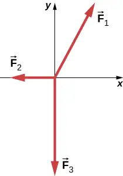
21. Two teenagers are pulling on ropes attached to a tree. The angle between the ropes is \(30.0{}^{\circ}\). David pulls with a force of 400.0 N and Stephanie pulls with a force of 300.0 N. (a) Find the component form of the net force. (b) Find the magnitude of the resultant (net) force on the tree and the angle it makes with David’s rope.
Answer
a. \({\mathbf{\vec{F}}}_{\text{net}}=660.0\mathbf{\hat{i}}+150.0\mathbf{\hat{j}}\:\text{N}\); b. \(F_{\text{net}}=676.6\:\text{N}\) at \(\theta=12.8{}^{\circ}\) from David’s rope
5.2 Newton's First Law¶
22. Two forces of \({\mathbf{\vec{F}}}_{1}=\frac{75.0}{\sqrt{2}}(\mathbf{\hat{i}}-\mathbf{\hat{j}})\:\text{N}\) and \({\mathbf{\vec{F}}}_{2}=\frac{150.0}{\sqrt{2}}(\mathbf{\hat{i}}-\mathbf{\hat{j}})\:\text{N}\) act on an object. Find the third force \({\mathbf{\vec{F}}}_{3}\) that is needed to balance the first two forces.
23. While sliding a couch across a floor, Andrea and Jennifer exert forces \({\mathbf{\vec{F}}}_{\text{A}}\) and \({\mathbf{\vec{F}}}_{\text{J}}\) on the couch. Andrea’s force is due north with a magnitude of 130.0 N and Jennifer’s force is \(32{}^{\circ}\) east of north with a magnitude of 180.0 N. (a) Find the net force in component form. (b) Find the magnitude and direction of the net force. (c) If Andrea and Jennifer’s housemates, David and Stephanie, disagree with the move and want to prevent its relocation, with what combined force \({\mathbf{\vec{F}}}_{\text{DS}}\) should they push so that the couch does not move?
Answer
a. \({\mathbf{\vec{F}}}_{\text{net}}=95.0\mathbf{\hat{i}}+283\mathbf{\hat{j}}\text{N}\); b. 299 N at \(71{}^{\circ}\) north of east; c. \({\mathbf{\vec{F}}}_{\text{DS}}=-(95.0\mathbf{\hat{i}}+283\mathbf{\hat{j}})\:\text{N}\)
5.3 Newton's Second Law¶
24. Andrea, a 63.0-kg sprinter, starts a race with an acceleration of \(4.200\:\text{m/s}^{2}\). What is the net external force on her?
25. If the sprinter from the previous problem accelerates at that rate for 20.00 m and then maintains that velocity for the remainder of a 100.00-m dash, what will her time be for the race?
Answer
Running from rest, the sprinter attains a velocity of \(v=12.96\:\text{m/s}\), at end of acceleration. We find the time for acceleration using \(x=20.00\:\text{m}=0+0.5at_{1}{}^{2}\), or \(t_{1}=3.086\:\text{s.}\) For maintained velocity, \(x_{2}=vt_{2}\), or \(t_{2}=x_{2}\text{/}v=80.00\:\text{m}\text{/}12.96\:\text{m}\text{/}\text{s}=6.173\:\text{s}\). \(\text{Total time}=9.259\:\text{s}\).
26. A cleaner pushes a 4.50-kg laundry cart in such a way that the net external force on it is 60.0 N. Calculate the magnitude of his cart’s acceleration.
27. Astronauts in orbit are apparently weightless. This means that a clever method of measuring the mass of astronauts is needed to monitor their mass gains or losses, and adjust their diet. One way to do this is to exert a known force on an astronaut and measure the acceleration produced. Suppose a net external force of 50.0 N is exerted, and an astronaut’s acceleration is measured to be \(0.893\:\text{m/s}^{2}\). (a) Calculate her mass. (b) By exerting a force on the astronaut, the vehicle in which she orbits experiences an equal and opposite force. Use this knowledge to find equations for the acceleration of the spaceship and for the apparent acceleration of the spaceship and for the apparent acceleration that would be measured by an observer at rest relative to the spaceship. (c) Discuss how this would affect the measurement of the astronaut’s acceleration. Propose a method by which recoil of the vehicle is avoided.
Answer
a. \(m=56.0\:\text{kg}\); b. \(a_{\text{meas}}=a_{\text{astro}}+a_{\text{ship}},\:\text{where}\:a_{\text{ship}}=\frac{m_{\text{astro}}a_{\text{astro}}}{m_{\text{ship}}}\); c. If the force could be exerted on the astronaut by another source (other than the spaceship), then the spaceship would not experience a recoil.
28. In Figure 5.12, the net external force on the 24-kg mower is given as 51 N. If the force of friction opposing the motion is 24 N, what force F (in newtons) is the person exerting on the mower? Suppose the mower is moving at 1.5 m/s when the force F is removed. How far will the mower go before stopping?
29. The rocket sled shown below accelerates opposite to the motion at a rate of \(196\:\text{m/s}^{2}\). What force is necessary to produce this acceleration opposite to the motion? Assume that the rockets are off. The mass of the system is \(2.10\:\times\:{10}^{3}\) kg.
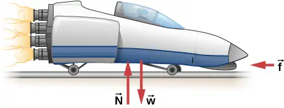
Answer
\(F_{\text{net}}=4.12\:\times\:{10}^{5}\:\text{N}\)
30. If the rocket sled shown in the previous problem starts with only one rocket burning, what is the magnitude of this acceleration? Assume that the mass of the system is \(2.10\:\times\:{10}^{3}\) kg, the thrust T is \(2.40\:\times\:{10}^{4}\:\text{N},\) and the force of friction opposing the motion is 650.0 N. (b) Why is the acceleration not one-fourth of what it is with all rockets burning?
31. What is the acceleration opposite to the motion of the rocket sled if it comes to rest in 1.10 s from a speed of 1000.0 km/h? (Such acceleration opposite to the motion caused one test subject to black out and have temporary blindness.)
Answer
\(a={253\:\text{m/s}}^{2}\)
32. Suppose two children push horizontally, but in exactly opposite directions, on a third child in a wagon. The first child exerts a force of 75.0 N, the second exerts a force of 90.0 N, friction is 12.0 N, and the mass of the third child plus wagon is 23.0 kg. (a) What is the system of interest if the acceleration of the child in the wagon is to be calculated? (See the free-body diagram.) (b) Calculate the acceleration. (c) What would the acceleration be if friction were 15.0 N?
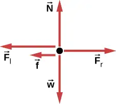
33. A powerful motorcycle can produce an acceleration of \(3.50\:\text{m/s}^{2}\) while traveling at 90.0 km/h. At that speed, the forces resisting motion, including friction and air resistance, total 400.0 N. (Air resistance is analogous to air friction. It always opposes the motion of an object.) What is the magnitude of the force that motorcycle exerts backward on the ground to produce its acceleration if the mass of the motorcycle with rider is 245 kg?
Answer
\(F_{\text{net}}=F-f=ma\Rightarrow F=1.26\:\times\:{10}^{3}\:\text{N}\)
34. A car with a mass of 1000.0 kg accelerates from 0 to 90.0 km/h in 10.0 s. (a) What is its acceleration? (b) What is the net force on the car?
35. The driver in the previous problem applies the brakes when the car is moving at 90.0 km/h, and the car comes to rest after traveling 40.0 m. What is the net force on the car during its acceleration opposite to the motion?
Answer
\(\begin{array}{c} v^{2}=v_{0}^{2}+2ax\Rightarrow a=-7.80\:\text{m/s}^{2} \\ F_{\text{net}}=-7.80\:\times\:{10}^{3}\:\text{N} \end{array}\)
36. An 80.0-kg passenger in an SUV traveling at \(1.00\:\times\:{10}^{2}\) km/h is wearing a seat belt. The driver slams on the brakes and the SUV stops in 45.0 m. Find the force of the seat belt on the passenger.
37. A particle of mass 2.0 kg is acted on by a single force \({\mathbf{\vec{F}}}_{1}=18\mathbf{\hat{i}}\:\text{N}.\) (a) What is the particle’s acceleration? (b) If the particle starts at rest, how far does it travel in the first 5.0 s?
Answer
a. \({\mathbf{\vec{F}}}_{\text{net}}=m\mathbf{\vec{a}}\Rightarrow\mathbf{\vec{a}}=9.0\mathbf{\hat{i}}\:\text{m/s}^{2}\); b. The acceleration has magnitude \(9.0\:\text{m/s}^{2}\), so \(x=110\:\text{m}\).
38. Suppose that the particle of the previous problem also experiences forces \({\mathbf{\vec{F}}}_{2}=-15\mathbf{\hat{i}}\:\text{N}\) and \({\mathbf{\vec{F}}}_{3}=6.0\mathbf{\hat{j}}\:\text{N}.\) What is its acceleration in this case?
39. Find the acceleration of the body of mass 5.0 kg shown below.
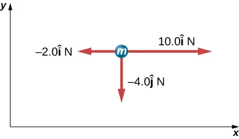
Answer
\(1.6\mathbf{\hat{i}}-0.8\mathbf{\hat{j}}\:\text{m/s}^{2}\)
40. In the following figure, the horizontal surface on which this block slides is frictionless. If the two forces acting on it each have magnitude \(F=30.0\:\text{N}\) and \(M=10.0\:\text{kg}\), what is the magnitude of the resulting acceleration of the block?
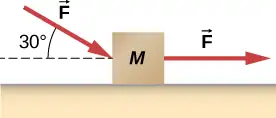
5.4 Mass and Weight¶
41. The weight of an astronaut plus their space suit on the Moon is only 250 N. (a) How much does the suited astronaut weigh on Earth? (b) What is the mass on the Moon? On Earth?
Answer
a. \(\begin{array}{ccc} w_{\text{Moon}} & = & mg_{\text{Moon}} \\ m & = & 150\:\text{kg} \\ w_{\text{Earth}} & = & 1.5\:\times\:{10}^{3}\:\text{N} \end{array}\); b. Mass does not change, so the suited astronaut’s mass on both Earth and the Moon is \(150\:\text{kg.}\)
42. Suppose the mass of a fully loaded module in which astronauts take off from the Moon is \(1.00\:\times\:{10}^{4}\) kg. The thrust of its engines is \(3.00\:\times\:{10}^{4}\) N. (a) Calculate the module’s magnitude of acceleration in a vertical takeoff from the Moon. (b) Could it lift off from Earth? If not, why not? If it could, calculate the magnitude of its acceleration.
43. A rocket sled accelerates at a rate of \({49.0\:\text{m/s}}^{2}\). Its passenger has a mass of 75.0 kg. (a) Calculate the horizontal component of the force the seat exerts against his body. Compare this with his weight using a ratio. (b) Calculate the direction and magnitude of the total force the seat exerts against his body.
Answer
a. \(\begin{array}{ccc} F_{\text{h}} & = & 3.68\:\times\:{10}^{3}\:\text{N and} \\ w & = & 7.35\:\times\:{10}^{2}\:\text{N} \\ \frac{F_{\text{h}}}{w} & = & 5.00\:\text{times greater than weight} \end{array}\);
b. \(\begin{array}{ccc} F_{\text{net}} & = & 3750\:\text{N} \\ \theta & = & 11.3{}^{\circ}\:\text{from horizontal} \end{array}\)
44. Repeat the previous problem for a situation in which the rocket sled accelerates opposite to the motion at a rate of \({201\:\text{m/s}}^{2}\). In this problem, the forces are exerted by the seat and the seat belt.
45. A body of mass 2.00 kg is pushed straight upward by a 25.0 N vertical force. What is its acceleration?
Answer
\(\begin{array}{ccc} w & = & 19.6\:\text{N} \\ F_{\text{net}} & = & 5.40\:\text{N} \\ F_{\text{net}} & = & ma\Rightarrow a=2.70\:\text{m/s}^{2} \end{array}\)
46. A car weighing 12,500 N starts from rest and accelerates to 83.0 km/h in 5.00 s. The friction force is 1350 N. Find the applied force produced by the engine.
47. A body with a mass of 10.0 kg is assumed to be in Earth’s gravitational field with \(g=9.80\:\text{m/s}^{2}\). What is the net force on the body if there are no other external forces acting on the object?
Answer
98 N
48. A firefighter has mass m; they hear the fire alarm and slides down the pole with acceleration a (which is less than g in magnitude). (a) Write an equation giving the vertical force they must apply to the pole. (b) If their mass is 90.0 kg and they accelerate at \(5.00\:\text{m/s}^{2},\) what is the magnitude of their applied force?
49. A baseball catcher is performing a stunt for a television commercial. He will catch a baseball (mass 145 g) dropped from a height of 60.0 m above his glove. His glove stops the ball in 0.0100 s. What is the force exerted by his glove on the ball?
Answer
497 N
50. When the Moon is directly overhead at sunset, the force by Earth on the Moon, \(F_{\text{EM}}\), is essentially at \(90{}^{\circ}\) to the force by the Sun on the Moon, \(F_{\text{SM}}\), as shown below. Given that \(F_{\text{EM}}=1.98\:\times\:{10}^{20}\:\text{N}\) and \(F_{\text{SM}}=4.36\:\times\:{10}^{20}\:\text{N},\) all other forces on the Moon are negligible, and the mass of the Moon is \(7.35\:\times\:{10}^{22}\:\text{kg},\) determine the magnitude of the Moon’s acceleration.
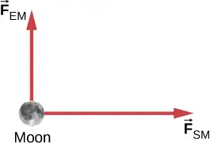
5.5 Newton’s Third Law¶
51. (a) What net external force is exerted on a 1100.0-kg artillery shell fired from a battleship if the shell is accelerated at \(2.40\:\times\:{10}^{4}\:\text{m/s}^{2}?\) (b) What is the magnitude of the force exerted on the ship by the artillery shell, and why?
Answer
a. \(F_{\text{net}}=2.64\:\times\:{10}^{7}\:\text{N;}\) b. The force exerted on the ship is also \(2.64\:\times\:{10}^{7}\:\text{N}\) because it is opposite the shell’s direction of motion.
52. A rugby player is being pushed backward by an opposing player who is exerting a force of 800.0 N on him. The mass of the losing player plus equipment is 90.0 kg, and he is accelerating backward at \(1.20\:\text{m/s}^{2}\). (a) What is the force of friction between the losing player’s feet and the grass? (b) What force does the winning player exert on the ground to move forward if his mass plus equipment is 110.0 kg?
53. A history book is lying on top of a physics book on a desk, as shown below; a free-body diagram is also shown. The history and physics books weigh 14 N and 18 N, respectively. Identify each force on each book with a double subscript notation (for instance, the contact force of the history book pressing against physics book can be described as \({\mathbf{\vec{F}}}_{\text{HP}}\)), and determine the value of each of these forces, explaining the process used.
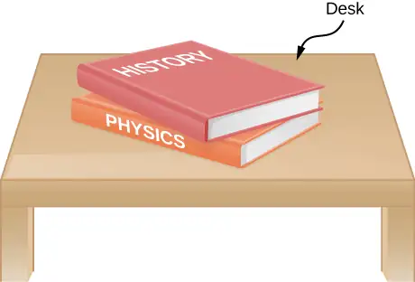
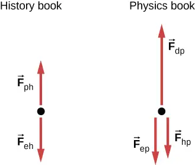
Answer
Because the weight of the history book is the force exerted by Earth on the history book, we represent it as \({\mathbf{\vec{F}}}_{\text{EH}}=-14\mathbf{\hat{j}}\:\text{N}.\) Aside from this, the history book interacts only with the physics book. Because the acceleration of the history book is zero, the net force on it is zero by Newton’s second law: \({\mathbf{\vec{F}}}_{\text{PH}}+{\mathbf{\vec{F}}}_{\text{EH}}=\mathbf{\overrightarrow{0}},\) where \({\mathbf{\vec{F}}}_{\text{PH}}\) is the force exerted by the physics book on the history book. Thus, \({\mathbf{\vec{F}}}_{\text{PH}}=-{\mathbf{\vec{F}}}_{\text{EH}}=-(-14\mathbf{\hat{j}})\:\text{N}=14\mathbf{\hat{j}}\:\text{N}.\) We find that the physics book exerts an upward force of magnitude 14 N on the history book. The physics book has three forces exerted on it: \({\mathbf{\vec{F}}}_{\text{EP}}\) due to Earth, \({\mathbf{\vec{F}}}_{\text{HP}}\) due to the history book, and \({\mathbf{\vec{F}}}_{\text{DP}}\) due to the desktop. Since the physics book weighs 18 N, \({\mathbf{\vec{F}}}_{\text{EP}}=-18\mathbf{\hat{j}}\:\text{N}.\) From Newton’s third law, \({\mathbf{\vec{F}}}_{\text{HP}}=-{\mathbf{\vec{F}}}_{\text{PH}},\) so \({\mathbf{\vec{F}}}_{\text{HP}}=-14\mathbf{\hat{j}}\:\text{N}.\) Newton’s second law applied to the physics book gives \(\sum\mathbf{\vec{F}}=\mathbf{\overrightarrow{0}},\) or \({\mathbf{\vec{F}}}_{\text{DP}}+{\mathbf{\vec{F}}}_{\text{EP}}+{\mathbf{\vec{F}}}_{\text{HP}}=\mathbf{\overrightarrow{0}},\) so \({\mathbf{\vec{F}}}_{\text{DP}}=-(-18\mathbf{\hat{j}})-(-14\mathbf{\hat{j}})=32\mathbf{\hat{j}}\:\text{N}.\) The desk exerts an upward force of 32 N on the physics book. To arrive at this solution, we apply Newton’s second law twice and Newton’s third law once.
54. A truck collides with a car, and during the collision, the net force on each vehicle is essentially the force exerted by the other. Suppose the mass of the car is 550 kg, the mass of the truck is 2200 kg, and the magnitude of the truck’s acceleration is \(10\:\text{m/s}^{2}\). Find the magnitude of the car’s acceleration.
5.6 Common Forces¶
55. A leg is suspended in a traction system, as shown below. (a) Which pulley in the figure is used to calculate the force exerted on the foot? (b) What is the tension in the rope? Here \(\mathbf{\vec{T}}\) is the tension, \({\mathbf{\vec{w}}}_{\text{leg}}\) is the weight of the leg, and \(\mathbf{\vec{w}}\) is the weight of the load that provides the tension. Express answers in terms of the unknown masses and angle.
![Figure shows a leg on the left. It is attached to a rope at the ankle and suspended from a pulley at the top. The rope continues to a second pulley on the right of the first, a third one to the bottom of the second, a fourth one to the bottom left of the third and a fifth one to the bottom right of the fourth. An object with weight w = mg is attached at the end of the rope. An arrow labeled w subscript leg points downwards from the ankle and an arrow labeled T points upwards from there. An arrow labeled T, from the fourth pulley to the third, forms an angle theta with the horizontal. Another arrow labeled T, from the fourth pulley to the fifth forms an angle minus theta with the horizontal.](img/cnx-uphysics05-06-traction-img.webp)
Answer
a. The free-body diagram of pulley 4:
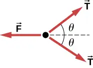
b. \(T=mg,\;F=2T\:\cos\:\theta=2mg\:\cos\:\theta\)
56. Suppose the shinbone in the preceding image was a femur in a traction setup for a broken bone, with pulleys and rope available. How might we be able to increase the force along the femur using the same weight?
57. Two teams of nine members each engage in a tug-of-war, pulling in opposite directions on a horizontal rope. Each of the first team’s members has an average mass of 68 kg and exerts an average force of 1350 N horizontally on the ground as they pull on the rope. Each of the second team’s members has an average mass of 73 kg and exerts an average force of 1365 N horizontally on the ground as they pull on the rope in the opposite direction. (a) What is the magnitude of the acceleration of the two teams, and which team wins? (b) What is the tension in the section of rope between the teams?
Answer
a. 65 N
b. \(1.22\:\times\:{10}^{4}\:\text{m/s}^{2}\)
58. What force does a trampoline have to apply to Jennifer, a 45.0-kg gymnast, to accelerate her straight up at \(7.50\:\text{m/s}^{2}\)? The answer is independent of the velocity of the gymnast—she can be moving up or down or can be instantly stationary.
59. (a) Calculate the tension in a vertical strand of spider web if a spider of mass \(2.00\:\times\:{10}^{-5}\:\text{kg}\) hangs motionless on it. (b) Calculate the tension in a horizontal strand of spider web if the same spider sits motionless in the middle of it much like the tightrope walker in Figure 5.26. The strand sags at an angle of \(12{}^{\circ}\) below the horizontal. Compare this with the tension in the vertical strand (find their ratio).
Answer
a. \(T=1.96\:\times\:{10}^{-4}\:\text{N;}\)
b. \(\begin{array}{c} T'=4.71\:\times\:{10}^{-4}\:\text{N} \\ \frac{T'}{T}=2.40\:\text{times the tension in the vertical strand} \end{array}\)
60. Suppose Kevin, a 60.0-kg gymnast, climbs a rope. (a) What is the tension in the rope if he climbs at a constant speed? (b) What is the tension in the rope if he accelerates upward at a rate of \(1.50\:\text{m/s}^{2}\)?
61. Show that, as explained in the text, a force \(F_{\perp}\) exerted on a flexible medium at its center and perpendicular to its length (such as on the tightrope wire in Figure 5.26) gives rise to a tension of magnitude \(T=F_{\perp}\text{/}2\:\sin(\theta)\).
Answer
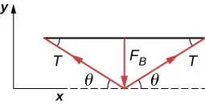
\(\begin{array}{c} F_{y\:\text{net}}=F_{\perp}-2T\:\sin\:\theta=0 \\ F_{\perp}=2T\sin\:\theta \\ T=\frac{F_{\perp}}{2\:\sin\:\theta} \end{array}\)
62. Consider Figure 5.28. The driver attempts to get the car out of the mud by exerting a perpendicular force of 610.0 N, and the distance she pushes in the middle of the rope is 1.00 m while she stands 6.00 m away from the car on the left and 6.00 m away from the tree on the right. What is the tension T in the rope, and how do you find the answer?
63. A bird has a mass of 26 g and perches in the middle of a stretched telephone line. (a) Show that the tension in the line can be calculated using the equation \(T=\frac{mg}{2\:\sin\:\theta}\). Determine the tension when (b) \(\theta=5{}^{\circ}\) and (c) \(\theta=0.5{}^{\circ}\). Assume that each half of the line is straight.
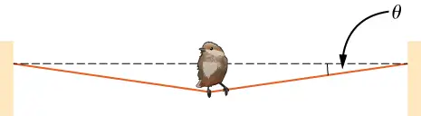
Answer
a. see Example 5.13; b. 1.5 N; c. 15 N
64. One end of a 30-m rope is tied to a tree; the other end is tied to a car stuck in the mud. The motorist pulls sideways on the midpoint of the rope, displacing it a distance of 2 m. If he exerts a force of 80 N under these conditions, determine the force exerted on the car.
65. Consider the baby being weighed in the following figure. (a) What is the mass of the infant and basket if a scale reading of 55 N is observed? (b) What is tension \(T_{1}\) in the cord attaching the baby to the scale? (c) What is tension \(T_{2}\) in the cord attaching the scale to the ceiling, if the scale has a mass of 0.500 kg? (d) Sketch the situation, indicating the system of interest used to solve each part. The masses of the cords are negligible.
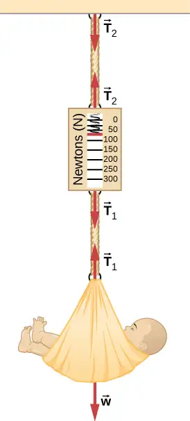
Answer
a. 5.6 kg; b. 55 N; c. \(T_{2}=60\:\text{N}\);
d.
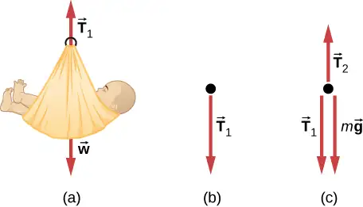
66. What force must be applied to a 100.0-kg crate on a frictionless plane inclined at \(30{}^{\circ}\) to cause an acceleration of \({2.0\:\text{m/s}}^{2}\) up the plane?
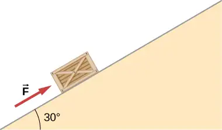
67. A 2.0-kg block is on a perfectly smooth ramp that makes an angle of \(30{}^{\circ}\) with the horizontal. (a) What is the block’s acceleration down the ramp and the force of the ramp on the block? (b) What force applied upward along and parallel to the ramp would allow the block to move with constant velocity?
Answer
a. \(4.9\:\text{m/s}^{2}\), 17 N; b. 9.8 N
5.7 Drawing Free-Body Diagrams¶
68. A ball of mass m hangs at rest, suspended by a string. (a) Sketch all forces. (b) Draw the free-body diagram for the ball.
69. A car moves along a horizontal road. Draw a free-body diagram; be sure to include the friction of the road that opposes the forward motion of the car.
Answer
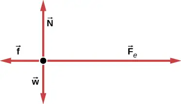
70. A runner pushes against the track, as shown. (a) Provide a free-body diagram showing all the forces on the runner. (Hint: Place all forces at the center of his body, and include his weight.) (b) Give a revised diagram showing the xy-component form.
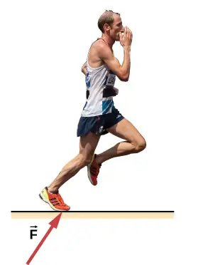
71. The traffic light hangs from the cables as shown. Draw a free-body diagram on a coordinate plane for this situation.
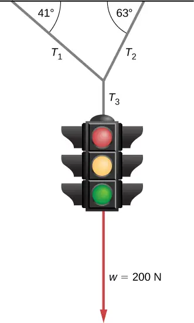
Answer
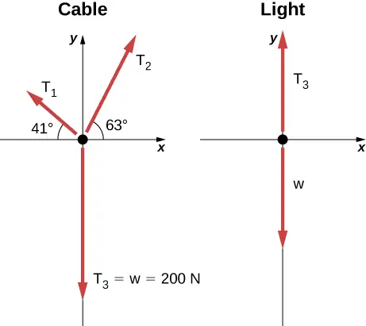
Additional Problems¶
72. Two small forces, \({\mathbf{\vec{F}}}_{1}=-2.40\mathbf{\hat{i}}-6.10\mathbf{\hat{j}}\) N and \({\mathbf{\vec{F}}}_{2}=8.50\mathbf{\hat{i}}-9.70\mathbf{\hat{j}}\) N, are exerted on a rogue asteroid by a pair of space tractors. (a) Find the net force. (b) What are the magnitude and direction of the net force? (c) If the mass of the asteroid is 125 kg, what acceleration does it experience (in vector form)? (d) What are the magnitude and direction of the acceleration?
73. Two forces of 25 and 45 N act on an object. Their directions differ by \(70{}^{\circ}\). The resulting acceleration has magnitude of \(10.0\:\text{m/s}^{2}.\) What is the mass of the body?
Answer
5.90 kg
74. A force of 1600 N acts parallel to a ramp to push a 300-kg piano into a moving van. The ramp is inclined at \(20{}^{\circ}\). (a) What is the acceleration of the piano up the ramp? (b) What is the velocity of the piano when it reaches the top if the ramp is 4.0 m long and the piano starts from rest?
75. Draw a free-body diagram of a diver who has entered the water, moved downward, and is acted on by an upward force due to the water which balances the weight (that is, the diver is suspended).
Answer
76. For a swimmer who has just jumped off a diving board, assume air resistance is negligible. The swimmer has a mass of 80.0 kg and jumps off a board 10.0 m above the water. Three seconds after entering the water, her downward motion is stopped. What average upward force did the water exert on her?
77. (a) Find an equation to determine the magnitude of the net force required to stop a car of mass m, given that the initial speed of the car is \(v_{0}\) and the stopping distance is x. (b) Find the magnitude of the net force if the mass of the car is 1050 kg, the initial speed is 40.0 km/h, and the stopping distance is 25.0 m.
Answer
a. \(F_{\text{net}}=\frac{m(v^{2}-v_{0}{}^{2})}{2x}\); b. 2590 N
78. A sailboat has a mass of \(1.50\:\times\:{10}^{3}\) kg and is acted on by a force of \(2.00\:\times\:{10}^{3}\) N toward the east, while the wind acts behind the sails with a force of \(3.00\:\times\:{10}^{3}\) N in a direction \(45{}^{\circ}\) north of east. Find the magnitude and direction of the resulting acceleration.
79. Find the acceleration of the body of mass 10.0 kg shown below.
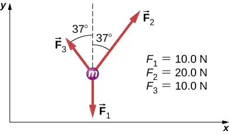
Answer
\(\begin{array}{l} {\mathbf{\vec{F}}}_{\text{net}}={\mathbf{\vec{F}}}_{1}+{\mathbf{\vec{F}}}_{2}+{\mathbf{\vec{F}}}_{3}=(6.02\mathbf{\hat{i}}+14.0\mathbf{\hat{j}})\text{N} \\ {\mathbf{\vec{F}}}_{\text{net}}=m\mathbf{\vec{a}}\Rightarrow\mathbf{\vec{a}}=\frac{{\mathbf{\vec{F}}}_{\text{net}}}{m}=\frac{6.02\mathbf{\hat{i}}+14.0\mathbf{\hat{j}}\text{N}}{10.0\text{kg}}=(0.602\mathbf{\hat{i}}+1.40\mathbf{\hat{j}})\text{m/s}^{2} \end{array}\)
80. A body of mass 2.0 kg is moving along the x-axis with a speed of 3.0 m/s at the instant represented below. (a) What is the acceleration of the body? (b) What is the body’s velocity 10.0 s later? (c) What is its displacement after 10.0 s?
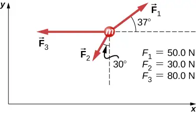
81. Force \({\mathbf{\vec{F}}}_{\text{B}}\) has twice the magnitude of force \({\mathbf{\vec{F}}}_{\text{A}}.\) Find the direction in which the particle accelerates in this figure.
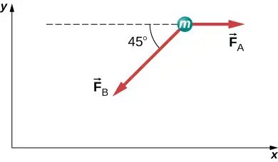
Answer
\(\begin{array}{c} {\mathbf{\vec{F}}}_{\text{net}}={\mathbf{\vec{F}}}_{\text{A}}+{\mathbf{\vec{F}}}_{\text{B}} \\ {\mathbf{\vec{F}}}_{\text{net}}=A\mathbf{\hat{i}}+(-1.41A\mathbf{\hat{i}}-1.41A\mathbf{\hat{j}}) \\ {\mathbf{\vec{F}}}_{\text{net}}=A(-0.41\mathbf{\hat{i}}-1.41\mathbf{\hat{j}}) \\ \theta=254{}^{\circ} \end{array}\)
(We add \(180{}^{\circ}\), because the angle is in quadrant IV.)
82. Shown below is a body of mass 1.0 kg under the influence of the forces \({\mathbf{\vec{F}}}_{\mathbf{A}}\), \({\mathbf{\vec{F}}}_{\mathbf{B}}\), and \(m\mathbf{\vec{g}}\). If the body accelerates to the left at \(20\:\text{m/s}^{2}\), what are \({\mathbf{\vec{F}}}_{\mathbf{A}}\) and \({\mathbf{\vec{F}}}_{\mathbf{B}}\)?
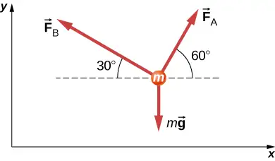
83. A force acts on a car of mass m so that the speed v of the car increases with position x as \(v=kx^{2}\), where k is constant and all quantities are in SI units. Find the force acting on the car as a function of position.
Answer
\(F=2mk^{2}x^{2}\); First, take the derivative of the velocity function to obtain \(a=2kxv=2kx(kx^{2})=2k^{2}x^{3}\). Then apply Newton’s second law \(F=ma=2mk^{2}x^{2}\).
84. A 7.0-N force parallel to an incline is applied to a 1.0-kg crate. The ramp is tilted at \(20{}^{\circ}\) and is frictionless. (a) What is the acceleration of the crate? (b) If all other conditions are the same but the ramp has a friction force of 1.9 N, what is the acceleration?
85. Two boxes, A and B, are at rest. Box A is on level ground, while box B rests on an inclined plane tilted at angle \(\theta\) with the horizontal. (a) Write expressions for the normal force acting on each block. (b) Compare the two forces; that is, tell which one is larger or whether they are equal in magnitude. (c) If the angle of incline is \(10{}^{\circ}\), which force is greater?
Answer
a. For box A, \(N_{\text{A}}=mg\) and \(N_{\text{B}}=mg\:\cos\:\theta\); b. \(N_{\text{A}} \gt N_{\text{B}}\) because for \(\theta \lt 90{}^{\circ}\), \(\cos\:\theta \lt 1\); c. \(N_{\text{A}} \gt N_{\text{B}}\) when \(\theta=10{}^{\circ}\)
86. A mass of 250.0 g is suspended from a spring hanging vertically. The spring stretches 6.00 cm. How much will the spring stretch if the suspended mass is 530.0 g?
87. As shown below, two identical springs, each with the spring constant 20 N/m, support a 15.0-N weight. (a) What is the tension in spring A? (b) What is the amount of stretch of spring A from the rest position?
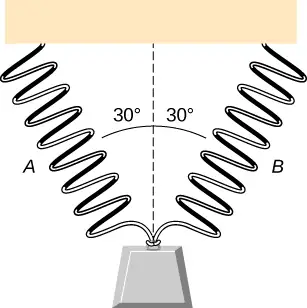
Answer
a. 8.66 N; b. 0.433 m
88. Shown below is a 30.0-kg block resting on a frictionless ramp inclined at \(60{}^{\circ}\) to the horizontal. The block is held by a spring that is stretched 5.0 cm. What is the force constant of the spring?
89. In building a house, carpenters use nails from a large box. The box is suspended from a spring twice during the day to measure the usage of nails. At the beginning of the day, the spring stretches 50 cm. At the end of the day, the spring stretches 30 cm. What fraction or percentage of the nails have been used?
Answer
0.40 or 40%
90. A force is applied to a block to move it up a \(30{}^{\circ}\) incline. The incline is frictionless. If \(F=65.0\:\text{N}\) and \(M=5.00\:\text{kg}\), what is the magnitude of the acceleration of the block?
91. Two forces are applied to a 5.0-kg object, and it accelerates at a rate of \(2.0\:\text{m/s}^{2}\) in the positive y-direction. If one of the forces acts in the positive x-direction with magnitude 12.0 N, find the magnitude of the other force.
Answer
16 N
92. The block on the right shown below has more mass than the block on the left (\(m_{2} \gt m_{1}\)). Draw free-body diagrams for each block.
Challenge Problems¶
93. If two tugboats pull on a disabled vessel, as shown here in an overhead view, the disabled vessel will be pulled along the direction indicated by the result of the exerted forces. (a) Draw a free-body diagram for the vessel. Assume no friction or drag forces affect the vessel. (b) Did you include all forces in the overhead view in your free-body diagram? Why or why not?
Answer
a.
; b. No; \({\mathbf{\vec{F}}}_{\text{R}}\) is not shown, because it would replace \({\mathbf{\vec{F}}}_{1}\) and \({\mathbf{\vec{F}}}_{2}\). (If we want to show it, we could draw it and then place squiggly lines on \({\mathbf{\vec{F}}}_{1}\) and \({\mathbf{\vec{F}}}_{2}\) to show that they are no longer considered.
94. A 10.0-kg object is initially moving east at 15.0 m/s. Then a force acts on it for 2.00 s, after which it moves northwest, also at 15.0 m/s. What are the magnitude and direction of the average force that acted on the object over the 2.00-s interval?
95. On June 25, 1983, shot-putter Udo Beyer of East Germany threw the 7.26-kg shot 22.22 m, which at that time was a world record. (a) If the shot was released at a height of 2.20 m with a projection angle of \(45.0{}^{\circ}\), what was its initial velocity? (b) If while in Beyer’s hand the shot was accelerated uniformly over a distance of 1.20 m, what was the net force on it?
Answer
a. 14.1 m/s; b. 601 N
96. A body of mass m moves in a horizontal direction such that at time t its position is given by \(x(t)=at^{4}+bt^{3}+ct,\) where a, b, and c are constants. (a) What is the acceleration of the body? (b) What is the time-dependent force acting on the body?
97. A body of mass m has initial velocity \(v_{0}\) in the positive x-direction. It is acted on by a constant force F for time t until the velocity becomes zero; the force continues to act on the body until its velocity becomes \(-v_{0}\) in the same amount of time. Write an expression for the total distance the body travels in terms of the variables indicated.
Answer
\(\frac{F}{m}t^{2}\)
98. The velocities of a 3.0-kg object at \(t=6.0\:\text{s}\) and \(t=8.0\:\text{s}\) are \((3.0\mathbf{\hat{i}}-6.0\mathbf{\hat{j}}+4.0\mathbf{\hat{k}})\:\text{m/s}\) and \((-2.0\mathbf{\hat{i}}+4.0\mathbf{\hat{k}})\:\text{m/s}\), respectively. If the object is moving at constant acceleration, what is the force acting on it?
99. A 120-kg astronaut is riding in a rocket sled that is sliding along an inclined plane. The sled has a horizontal component of acceleration of \(5.0\:\text{m}\text{/}\text{s}^{2}\) and a downward component of \(3.8\:\text{m}\text{/}\text{s}^{2}\). Calculate the magnitude of the force on the rider by the sled. (Hint: Remember that gravitational acceleration must be considered.)
Answer
936 N
100. Two forces are acting on a 5.0-kg object that moves with acceleration \(2.0\:\text{m/s}^{2}\) in the positive y-direction. If one of the forces acts in the positive x-direction and has magnitude of 12 N, what is the magnitude of the other force?
101. Suppose that you are viewing a soccer game from a helicopter above the playing field. Two soccer players simultaneously kick a stationary soccer ball on the flat field; the soccer ball has mass 0.420 kg. The first player kicks with force 162 N at \(9.0{}^{\circ}\) north of west. At the same instant, the second player kicks with force 215 N at \(15{}^{\circ}\) east of south. Find the acceleration of the ball in \(\mathbf{\hat{i}}\) and \(\mathbf{\hat{j}}\) form.
Answer
\(\mathbf{\vec{a}}=-248\mathbf{\hat{i}}-433\mathbf{\hat{j}}\text{m}\text{/}\text{s}^{2}\)
102. A 10.0-kg mass hangs from a spring that has the spring constant 535 N/m. Find the position of the end of the spring away from its rest position. (Use \(g=9.80\:\text{m/s}^{2}\).)
103. A 0.0502-kg pair of fuzzy dice is attached to the rearview mirror of a car by a short string. The car accelerates at constant rate, and the dice hang at an angle of \(3.20{}^{\circ}\) from the vertical because of the car’s acceleration. What is the magnitude of the acceleration of the car?
Answer
\(0.548\:\text{m/s}^{2}\)
104. At a circus, a donkey pulls on a sled carrying a small clown with a force given by \(2.48\mathbf{\hat{i}}+4.33\mathbf{\hat{j}}\:\text{N}\). A horse pulls on the same sled, aiding the hapless donkey, with a force of \(6.56\mathbf{\hat{i}}+5.33\mathbf{\hat{j}}\:\text{N}\). The mass of the sled is 575 kg. Using \(\mathbf{\hat{i}}\) and \(\mathbf{\hat{j}}\) form for the answer to each problem, find (a) the net force on the sled when the two animals act together, (b) the acceleration of the sled, and (c) the velocity after 6.50 s.
105. Hanging from the ceiling over a baby bed, well out of baby’s reach, is a string with plastic shapes, as shown here. The string is taut (there is no slack), as shown by the straight segments. Each plastic shape has the same mass m, and they are equally spaced by a distance d, as shown. The angles labeled \(\theta\) describe the angle formed by the end of the string and the ceiling at each end. The center length of sting is horizontal. The remaining two segments each form an angle with the horizontal, labeled \(\phi\). Let \(T_{1}\) be the tension in the leftmost section of the string, \(T_{2}\) be the tension in the section adjacent to it, and \(T_{3}\) be the tension in the horizontal segment. (a) Find an equation for the tension in each section of the string in terms of the variables m, g, and \(\theta\). (b) Find the angle \(\phi\) in terms of the angle \(\theta\). (c) If \(\theta=5.10{}^{\circ}\), what is the value of \(\phi\)? (d) Find the distance x between the endpoints in terms of d and \(\theta\).
Answer
a. \(T_{1}=\frac{2mg}{\sin\:\theta}\), \(T_{2}=\frac{mg}{\sin\left( \arctan\left( \frac{1}{2}\tan\:\theta \right) \right)}\), \(T_{3}=\frac{2mg}{\tan\:\theta};\) b. \(\phi=\arctan\left( \frac{1}{2}\tan\:\theta \right)\); c. \(2.56{}^{\circ}\); (d) \(x=d\left( 2\:\cos\:\theta+2\:\cos\left( \arctan\left( \frac{1}{2}\tan\:\theta \right) \right)+1 \right)\)
106. A bullet shot from a rifle has mass of 10.0 g and travels to the right at 350 m/s. It strikes a target, a large bag of sand, penetrating it a distance of 34.0 cm. Find the magnitude and direction of the retarding force that slows and stops the bullet.
107. An object is acted on by three simultaneous forces: \({\mathbf{\vec{F}}}_{1}=(-3.00\mathbf{\hat{i}}+2.00\mathbf{\hat{j}})\:\text{N}\), \({\mathbf{\vec{F}}}_{2}=(6.00\mathbf{\hat{i}}-4.00\mathbf{\hat{j}})\:\text{N}\), and \({\mathbf{\vec{F}}}_{3}=(2.00\mathbf{\hat{i}}+5.00\mathbf{\hat{j}})\:\text{N}\). The object experiences acceleration of \(4.23\:\text{m/s}^{2}\). (a) Find the acceleration vector in terms of m. (b) Find the mass of the object. (c) If the object begins from rest, find its speed after 5.00 s. (d) Find the components of the velocity of the object after 5.00 s.
Answer
a. \(\mathbf{\vec{a}}=\left( \frac{5.00}{m}\mathbf{\hat{i}}+\frac{3.00}{m}\mathbf{\hat{j}} \right)\:\text{m}\text{/}\text{s}^{2};\) b. 1.38 kg; c. 21.2 m/s; d. \(\mathbf{\vec{v}}=(18.1\mathbf{\hat{i}}+10.9\mathbf{\hat{j}})\:\text{m}\text{/}\text{s}^{2}\)
108. In a particle accelerator, a proton has mass \(1.67\:\times\:{10}^{-27}\:\text{kg}\) and an initial speed of \(2.00\:\times\:{10}^{5}\:\text{m}\text{/}\text{s.}\) It moves in a straight line, and its speed increases to \(9.00\:\times\:{10}^{5}\:\text{m}\text{/}\text{s}\) in a distance of 10.0 cm. Assume that the acceleration is constant. Find the magnitude of the force exerted on the proton.
109. A drone is being directed across a frictionless ice-covered lake. The mass of the drone is 1.50 kg, and its velocity is \(3.00\mathbf{\hat{i}}\text{m}\text{/}\text{s}\). After 10.0 s, the velocity is \(9.00\mathbf{\hat{i}}+4.00\mathbf{\hat{j}}\text{m}\text{/}\text{s}\). If a constant force in the horizontal direction is causing this change in motion, find (a) the components of the force and (b) the magnitude of the force.
Answer
a. \(0.900\mathbf{\hat{i}}+0.600\mathbf{\hat{j}}\:\text{N}\); b. 1.08 N
Adapted from University Physics Volume 1 by OpenStax, licensed under CC BY 4.0. Access the original for free at openstax.org. Changes: converted to the web reading format of The Open Book Project.